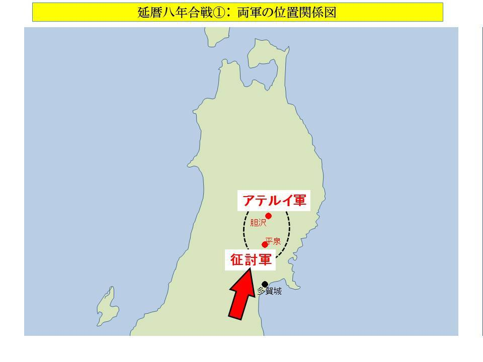

| アテルイと田村麻呂 | |
| 土居洋三 | |
| Maximilien Publishing (2017) | |
アテルイと田村麻呂
土居洋三
（目次）
まえがき
一 蝦夷とは
二 アテルイ登場までの形勢
三 延暦八年合戦
三～一 征討軍進発
三～二 作戦
三～三 合戦
三～四 桓武天皇激怒
四 胆沢（いさわ）攻防戦
四～一 坂上田村麻呂登場
四～二 征夷大将軍
四～三 アテルイの投降と死
五 蝦夷征討の終結
六 その後
あとがき
まえがき
アテルイは、日本古代史の中で、特異な存在である。
なぜかというと、たとえば聖徳太子や蘇我入鹿、天智天皇、藤原鎌足などをはじめとする、日本国家を造り上げてきた多くの特筆すべき人々は、すべて大和朝廷そのもの、あるいはその体制下で活動したのに対して、アテルイだけは「反体制側」の人間だったからである。
この場合の「反体制側」というのは、ごく大雑把に言うと、日本列島に縄文時代から住み続けてきた「縄文日本人」のことである。
彼らは、紀元前五世紀ごろから、水稲農耕と先進技術を携えて大陸から渡来してきた「弥生人」によって圧迫され、北九州から畿内へと、順次その支配下に入った。やがて弥生人の大勢力が大和朝廷を開創して以後も、その圧迫（征服といってもいいが）は継続し、やがて日本列島全土を支配下に治めることになる。
ここで圧迫という言葉を用いたのは、縄文日本人を支配下に組み入れるにあたって、弥生人が、戦闘ではなく、平和的な融合を基本姿勢としたからだ。しかし、最後に残った東北地方を支配するに際しては、平和的融合と武力を併せて用い、最終段階では圧倒的な武力を行使したから、これはもはや「征服」と呼んでいい。そして、その「征服」行動に対して徹底抗戦したのがアテルイである。
大和朝廷は、すでにこの時点では彼らを「縄文日本人」ではなく、「蝦夷（えみし）」と呼んでいた。大和人（弥生人）の王化に従わない人々という意味を込めて、侮蔑（ぶべつ）の名を付したのである。しかし「蝦夷」の人々にしてみれば、何の断りもなしにズカズカと日本列島に踏み込み、一方的に自分たちの上に立って蔑視する大和人は、身勝手な侵略者以外の何ものでもなかった。
ともあれ、アテルイは、そのような理不尽極まる大和朝廷の侵攻に対して大きく立ちはだかった。
ふつう、この時代の合戦の詳細は史書に記されていないものだが、延暦八年（七八九）に行われた合戦（本書ではそれを『延暦八年合戦』と呼ぶ）だけは、驚くほど詳細に記録されている。おそらくそれは、アテルイ率いる蝦夷軍に惨敗を喫した朝廷軍の指揮官たちが、のちに敗戦の責任を問われたときに述べた内容がそのまま記録されたからだろう。アテルイがその後に坂上田村麻呂と交えた戦闘の記録はほとんど残されていないから、延暦八年合戦の詳細報告は、例外中の例外といっていい。だが、この記録が存在するからこそ、私たちは将軍としてのアテルイの高い戦術能力を知ることができるし、彼が日本史に残る幾多の将軍・武将の中でも、際立って優れた武人だったことを理解することができる。
本書では、この延暦八年合戦を詳細に検討することによってアテルイという稀有（けう）の戦術家の実像を炙（あぶ）り出し、さらに、それほどの彼が、なぜのちに坂上田村麻呂に敗れたのか、その理由を紐解（ひもと）いてゆきたい。
なお本書は、拙著『大和朝廷北征史』からアテルイと坂上田村麻呂に関する記述を抜き出して編集し、新たに関連記事を適宜織り込んで構成した。
一 蝦夷とは
大和の人々は、北東北に地盤をもつ縄文日本人を、「エミシ」と呼んだ。
もとは「毛人」と表記したが、これには「尊敬に値する人たち」という意味が含まれている。そのため、大化改新前に朝廷で絶大な権力を振った蘇我蝦夷（そがのえみし）の名を「毛人」と表記することがあるなど、高貴な人物の名に用いられることがあった。大陸から渡って来た弥生人たちにとって、古くから日本列島に居住していた縄文日本人の穏和な人柄や生活状況は、中国でいう「大人（たいじん）」の風を備えていたように見えただろうから、尊敬の意を込めて「毛人」と呼んだと思われる。
現代の研究成果では、ごく一般的には、
「縄文人は平和を好み、戦争をしない」
という認識がある。なぜなら、弥生時代の古墳や遺跡から多数の殺傷人骨が発掘されているのに対して、縄文時代のそれからは、ほとんど発見されていないからである。
さらに、青森の三内丸山遺跡の発掘は、縄文時代の人々がいかに高度に組織された社会を形成し、進化した文化をもっていたかを証している。そこには、原始的な狩猟採集を中心とした文化ではなく、それを基礎にしてもっと進化した社会構造が存在していた。
この遺跡は縄文時代中期のものというから、弥生人が渡来した紀元前五世紀よりかなり以前のものだが、その時代にすでに既成概念を覆すほどの高度な社会を運営していたわけだから、初期稲作文化を携えて大陸からやって来た弥生人は、たとえ日常に使用する道具などの技術的先進性を保持していたとしても、縄文日本人の営む社会や文化の様相については、大いに目を見張ったことだろう。すでに三内丸山の文化は衰微していたかもしれないが、それと同等かそれ以上の規模のコミュニティーが日本全国に散在していて、稲作という先進文化をもつ渡来人たちを、穏やかに受け入れていった。そんな縄文日本人を、彼らが「大人」と感じたのは当然のことである。
しかし、いつのころからか、「毛人」は「蝦夷」という字があてられるようになった。
これには、渡来した弥生人たちが持ち込んだ中華思想が影響しているだろう。
古来中国では、漢民族が支配する国家を世界の中央に位置する文化国家として鑽仰（さんぎょう）し、その周辺の民族を「文化の遅れた国」として蔑（さげす）んできた。これが中華思想である。
北方の民族を「北荻（ほくてき）」、西方を「西戎（せいじゅう）」、南方を「南蛮」、そして東方を「東夷（とうい）＝東方のえびす」と呼ぶ。日本は中国の東方に位置するから「東夷」とされ、邪馬台国についての記述は『魏志』の中の『東夷伝倭人条』（これを略して『魏志倭人伝』という）に、「東夷」として載せられている。大和朝廷は、中国から「東夷」と蔑視されていながらも、自らを日本列島の中の最も優れた集団と意識し、中国の「四囲蔑視」の考え方を取り入れて、大和政権の支配下に入らない人々を「えびす」として蔑視するようになった。
ただ、なぜ「蝦夷」という名を付したのか、その理由と語源はよくわかっていない。関東あたりまで進出した弥生人側から見れば、蝦夷は東北一帯に居住しているから、「夷」という字は「東夷」からもってきたのだろうが、「蝦」の方は魚類の「えび」のことだから、それが縄文日本人とどのように結びつくのか、わからない。
◇
蝦夷は『古事記』や『日本書紀』のところどころに登場するが、何といっても景行天皇の命令によって行われた日本武尊（やまとたけるのみこと）の東北遠征の対象として描かれているのが最も印象的だ。この記事のどこまでが事実かどうか不明だが、少なくとも朝廷軍が蝦夷討伐のために東北に遠征したことは間違いないだろう。それほどに、大和朝廷にとって東北の蝦夷は、支配するに難しい存在だった。
それ以後の蝦夷の主な動きと大和朝廷の北征（東北地方への遠征）について、簡単に紹介しておきたい。
五八一年（敏達天皇十）。
数千の蝦夷が辺境を侵略して村々を荒らし、略奪した。侵略した場所も戦闘の様子も記されていないが、官軍（朝廷軍）はこれを撃退して、蝦夷の綾粕（あやかす）という首領を捕え、大和に連行した。
敏達（びたつ）天皇は綾粕を引見して、
「かつて景行天皇は、お前たち蝦夷を討伐された。そのとき、罪科に応じて殺すべきものは殺し、許すべき者は許された。いま、私はこの前例に従って、首領者であるお前を殺そうと思う」
と告げたところ、これを聞いた綾粕は恐れ入り、その場にひれ伏して許しを請い、
「いまより子々孫々に至るまで、必ず帝にお仕え致します」
と誓約したので、許された。
八年後の五八九年（崇峻天皇二）七月。
朝廷は、近江臣満（おうみのおみみつ）という者を「東山道」の使者として派遣し、蝦夷の国との国境を視察させた。近江臣満がどのような人物かはわからないが、危険を伴う国境視察という役目を考えれば、武人だったに違いない。おそらく、八年前に「帝にお仕えします」と誓った綾粕が、そのままおとなしくしているかどうか、その近況を偵察させたのだろう。その結果は記されていない。
いま「東山道」と書いたが、この時代、都を中心として、日本全国を「五畿七道」に分割して統治していた。「五畿」は、都周辺の五つの国で、大和・山城・河内・摂津・和泉を指す。大和から遠方に位置する地方を「七道」といい、東海道・東山道・北陸道・山陰道・山陽道・南海道・西海道の七つに分割した。そして、それぞれの地方に通じる官道を、同じ名で呼んだ。たとえば、地方としての東北の名称は「東山道」であり、都からその地に通じる官道を「東山道」と呼んだ。
七世紀（舒明天皇～皇極天皇）に入ると、蝦夷の人々が大和にやって来て天皇に拝謁することが定着していたようだ。
天皇への積極的な服従姿勢を顕示（けんじ）することによって、平和な関係維持を願ったものだろう。このころ、朝廷最大の実力者といっていい蘇我蝦夷が彼らを私邸に招いて饗応したことが記録されているから、この時期の朝廷と蝦夷の関係は、ひどく良好だった。というより、蝦夷の大和朝廷への服従努力が実を結んでいたというべきだろう。
六三七年（舒明天皇九）、蝦夷が入朝しなかった。
朝廷はこれを責めて、上毛野形名（かみつけののかたな）を将軍として征討軍を率いさせ、東北に派遣した。
ところが、いざ合戦となれば蝦夷は強く、形名は合戦に敗れて砦に逃げ込み、兵は四散して、やがて、ほとんど軍勢のいなくなった砦は蝦夷に包囲され、陥落目前となった。
その夜、形名の妻が、
「いまいましいことだ。蝦夷のために殺されてしまうとは」
と嘆き、形名のもとに行って、
「あなたの先祖の方々は青海原を渡り、万里の道をふみ越えて、海のかなたに国を平らげ、武勇を後世に伝えました。それにひきかえ、いまのあなたの窮状はどうでしょう。もしあなたが蝦夷に敗れて先祖の名を汚せば、後世の笑いものになるでしょう」
と諭しつつ、形名に強引に酒を飲ませた。
この妻はよほどの女傑だったようで、酔った形名の剣を取り上げて自らの腰に差したかと思うと、自ら十丁の弓を張って、その弦を、数十人の女に命じて激しく掻き鳴らさせた。こうすることによって、砦を包囲する蝦夷に、形名が合戦支度をしていると思わせるためである。妻のこの奇策に奮起した形名は、深く酔いながらも、ようやく武器をとって戦う姿勢を取り戻した。
一方、砦の中から聞こえてくる激しい弦音に驚いた蝦夷軍は、まだ軍勢が残っていると思い込み、警戒してわずかに後退した。その一瞬の隙を突いて、形名らが砦から打って出ると、四散していた兵がこの音を聞きつけて集結し、ともに蝦夷軍に攻勢をかけて、ついに撃破した。
蝦夷の人々は、狩猟生活などで習熟している馬術や弓の巧みさにおいて朝廷軍を凌駕（りょうが）していたが、それは小規模の戦場においてこそ活かされるもので、大規模の合戦となれば、やはり大陸の軍学などによって磨かれた朝廷軍の戦術が上回っていたようだ。形名が初めに敗れたのも、おそらくのちの朝廷軍が敗れたときと同じように、蝦夷が得意とする小規模の奇襲分断作戦に持ち込まれたからだろう。
大化改新が始まって二年後の六四七年（大化三）、朝廷は現・新潟市に淳足（ぬたり）柵を造り、柵戸（きのへ＝柵に配置した屯田兵）を置いた。淳足柵の正確な場所は不明だが、信濃川河口部の砂丘上などと考えられている。柵というのは城砦といっていいから、この地に朝廷が柵を築いたという事実からわかるのは、この時点の蝦夷の日本海側の勢力範囲は、新潟市あたりまでだったということである。
翌六四八年（大化四）、朝廷はさらに北上して、現・新潟県村上市あたりに磐舟（いわふね）柵を造り、越と信濃から民を選び、移住させて柵戸とし、蝦夷に備えた。磐舟は、やはり正確な場所は不明ながら、村上市岩船の浦田山一帯に土塁や石槨堡塁（せっかくほうるい）が残っていることから、この付近ではないかと考えられている。そうだとすると、この一年の間に、朝廷勢力は新潟市から村上市までの五十キロを北進したことになる。驚くべき早さといえる。
六五八年（斉明天皇四）四月、阿倍比羅夫（あべのひらふ）が軍船百八十艘を率いて、秋田と能代の蝦夷を討った。
この時期までの朝廷は、融和策に主力を置いた結果、帰属する蝦夷が増えてきていたのだが、それにもかかわらず、ここでにわかに征討軍を発したというのは、どうも違和感がある。しかも、蝦夷が誰を襲ったとか、どこの柵を攻撃したといったような、征討の理由になる事件が記されていない。そもそも、これが本当に「征討」だったのかどうかも、はっきりしない。
比羅夫は秋田湾で降伏した蝦夷を饗応し、冠位を授けているが、この事実を見ると、彼には最初から征討の意思がなかったように思える。もちろん船団を率いているわけだから、武力征討の準備はしていただろうが、その武力はあくまでも朝廷の武威を示すためのものであり、それを見た蝦夷の度肝を抜いて帰属させようとの戦略だったようだ。
一年後の六五九年（斉明天皇五）三月、比羅夫は再び百八十艘を率いて北上した。ただ、同じ月の十七日に、斉明天皇は大和に陸奥と越（こし）の蝦夷を招いて饗応しているから、このたびの遠征も、軍事優先ではなかったはずだ。昨年の遠征でも一度も戦うことなく蝦夷を帰属させているから、このたびも軍事よりも「融和政策の推進」が目的だったと考えられる。
じじつ、比羅夫は秋田と能代二郡の蝦夷二百四十一人とその捕虜三十一人、津軽郡の蝦夷百十二人とその捕虜四人、胆 振鉏 （いぶりさえ）の蝦夷二十人を一カ所に集めて饗応し、物を与え、船一隻と五色に染め分けた絹を奉じて、その土地の神を祀っている。
このたびの遠征からも、大和朝廷が律令国家を確立させてゆく過程において、東北地方の蝦夷に対してはあくまでも融和政策を進めようとした事実が浮彫りにされている。
比羅夫の三度目の遠征は翌年（六六０年＝斉明天皇六）三月に行われた。
このたびの遠征は三百艘を率いて北海道まで渡ったようで、その地で、蝦夷を苦しめる粛慎（しゅくしん）と戦闘した。粛慎というのは中国古代の北方民族の一つで、沿海州方面を居住地とするツングース族である。五四四年（欽明天皇五）十二月に佐渡に来航したという記事が残されているから、そのころには東北や北海道にも来ていたのだろう。
ともあれ、このとき比羅夫が戦った相手は大陸からやってきた粛慎であって、蝦夷ではない。蝦夷はむしろ、比羅夫に救いを求めてきた。この出来事もまた、朝廷の対蝦夷融和政策が順調に推移していた結果とみていい。
◇
六六三年八月、朝鮮半島の百済国を救援するため、朝廷は大規模な水軍を派遣し、白村江（はくすきのえ）で唐・新羅連合軍と海戦して、大敗した。
この対応策に追われて、朝廷はしばらく東北経営どころではなくなったが、ようやく霊亀元年（七一五）になって、大きな政策を打った。相模・上総・常陸・上野・武蔵・下野六国の富裕な民千戸を陸奥（現・西多賀富沢）の鎮所に移住させたのである。
このとき、当初は、諸国の国司が選んだ柵戸（きべ）千人と板東の兵を単身で移住させたのだが、のちに彼らが父母妻子らを呼んで一緒に暮らしたいと請願したため、朝廷はこれを許した。したがって「千人」が「千戸」に膨れ上がったわけだが、これは、たとえば一家族を五人として計算すると五千人になるから、当時としては、彼らだけで十分に一つの村が成り立つほどの大規模な移住といえる。
移住するということは、先住の蝦夷の人々との確執も生じるものだが、長い目で見れば、血の交わりによって和人と蝦夷の見分けがつかなくなるという、本当の意味での融合を果たすことができるようになる。朝廷は、その事態を願っていた。
霊亀二年（七一六）、陸奥国の最上郡と置玉郡を切り離して出羽国に編入し、信濃・上野・越前・越後の四カ国からそれぞれ百戸、合計四百戸の人民を、出羽国に移住させた。
三年後の養老三年（七一九）、東海道・東山道・北陸道の民二百戸を出羽柵戸として移住させた。
◇
融和政策が功を奏していたとみられるのはこのあたりまでで、翌養老四年（七二０）に、大事件が勃発する。蝦夷が反乱して、按察史（あぜち）正五位上の上毛野朝臣広人（かみつけぬのひろと）を殺したのである。
朝廷はその鎮定のために、播磨按察史正四位下の多治比県守（たじひのあがたもり）を持節征夷将軍に、従五位上の阿倍駿河を鎮狄（ちんてき）将軍に任じて派遣した。
按察史とは、地方行政を監視する朝廷の高官で、警察権と検察権を併せ持つ強大な権限を有する職であり、鎮狄将軍とは、日本海側の蝦夷を征討する臨時の将軍職名で、征狄将軍と称されることもある。これは、日本海側の蝦夷が夷狄の「狄」と呼ばれることによる。
この反乱の場所がどこだったのかは不明で、この征討がどのような結果になったのかも記録に残っていない。
記録には明確に表われていないが、この事件を起点にして、東北全体規模で、蝦夷の不穏な動きが活発化していったようだ。『続日本紀』などには、これを鎮圧しようと躍起になっている朝廷の姿が散見されてくる。
神亀元年（七二四）三月、海道（太平洋沿岸地域）の蝦夷が反乱を起こし、大掾（だいじょう＝国司三等官）従六位下の佐伯宿禰（すくね）児屋麻呂（こやまろ）を殺した。
これに対して朝廷は、四月、正四位上の藤原宇合（うまかい）を持節大将軍に任じて、蝦夷征討を命じた。そして、坂東九ヶ国の兵士三万に乗馬と射術を教え、合戦における布陣を訓練させた。来たるべき征討に備えて軍事演習を命じたのである。
さらに五月には、従五位上の小野牛養（うしかい）を鎮狄将軍に任じて、出羽国の蝦夷鎮圧を命じた。このたびの反乱は太平洋沿岸地域で起きたが、この反乱が出羽にまで飛び火することを警戒して、この措置が採られた。それほどに、このたびの乱が強勢だったということである。
この征討もまた、いつ始まってどのようなかたちで推移し、いつ終結したのか、その経緯は記録されていないが、翌年に陸奥国の蝦夷の捕虜百四十四人を伊予国に、五百七十八人を筑紫に、十五人を和泉監（いずみげん）にそれぞれ移住させたと記録されていることから、「勝ち方の程度」はわからないが、勝つには勝ったのだろう。
このたびの征討は、朝廷に重大な決断を強いた。それは、出羽と陸奥における蝦夷の各部族間の勢力関係や動きを調査・分析した結果、東北経営の拠点として多賀城を築造し、陸奥の政庁を置いたことである。このとき東北軍司令官に任じられたのは大野東人（あずまびと）だった。以後、この多賀城が蝦夷征討の拠点であり続けることを思えば、一つのエポックメイキングな出来事といっていい。
以後、宝亀元年（七七０）まで、大和勢力圏内の住民を東北に移住させたり、蝦夷の人々を大和圏内に移住させるといった「融和政策」が推進されることになるが、その「融和」のあり方には大きな問題があった。

二 アテルイ登場までの形勢
この時期の融和政策は、罪人や浮浪人・乞食など、いわゆる「良民」以外の人々の東北への移住が多くなってくる。朝廷としては、厄介者を追い払うことができて、しかも辺境の融和推進や武力強化に役立つから、一石二鳥の効果を得ることができるのだが、そのような、いわば「あぶれ者」を周辺地域に迎えざるを得なかった蝦夷の人々は、どのような思いを抱いただろうか。
「陸奥は罪人の土地ではない」
と怒りつつ、いっそうの侮蔑と屈辱を感じたはずだ。
たしかに朝廷の本心には、
「蝦夷など、浮浪者や罪人と同じようなものだ」
という蝦夷蔑視があった。
すでに触れたように、大和朝廷とは極論すれば大陸から渡来した弥生人が作った政権であって、彼らは先住の縄文日本人と平和裏に融和しながら北九州から大和に入った人々である。大和朝廷が東進して関東を支配下に収め、さらに北進して領土を拡大していったとき、大和政権の支配下に入ることを嫌った縄文日本人の集団に遭遇した。その人々を「蝦夷」と呼んだ。しかし、蝦夷の人々は先住の日本人だから、日本列島を支配下に置こうとする新参の大和朝廷から、戦乱時に「敵」と呼ばれることはあっても、けっして蔑視されるような存在ではない。
大陸から渡来した弥生人たちは、大和に到達するまでは縄文日本人に対し、親切な態度で大陸の技術を教えたが、大和政権という強大な権威を手にしてからは、次第に高圧的な「大和至上主義」を掲げて東進を重ね、遂には東北の縄文日本人を「蝦夷」として蔑視するまでになった。中華思想の影響がそのようにさせたし、何よりも「力を持つ者が他を制圧する」という強国の論理が大和政権の人々の心を捉えていた。そのことが、奈良時代における強烈な「蝦夷蔑視」を生み出し、やがて融和策として蝦夷の地に浮浪者や犯罪人を移住させる結果になった。そのような者を送り込まれた蝦夷の人々の心情はどのようなものだったか、察するにあまりある。
移住させられた浮浪者や罪人たちは、郷国でこそ蔑まれたり非難される立場にいたが、蝦夷の地に流されてからは、当然ながら「大和人」として蝦夷の人々を蔑視した。差別の態度で接し、蔑む言葉を使い、蝦夷であることを露骨に軽蔑した。そのような環境の中で、何の罪もない蝦夷の人々は、彼らに対して強い敵愾心を抱いたし、そのような政策を強いる大和政権への憎悪の念を蓄積させていった。
その鬱憤（うっぷん）が、一つの事件を引き起こす。これが、以後「三十二年」にわたって繰り広げられる東北大戦乱の幕開けといっていい。
宝亀元年（七七０）八月、朝廷の支配下にあった蝦夷の宇漢米公宇屈波宇（うかめのきみうくはう）という者が、一族を率いて郷里へ逃げ帰ったのである。これは明らかに朝廷への離反行為であり、謀反と受け取られてもやむを得ない。
しかし朝廷は、武をもって討伐せず、その理由を問いただすために使者を発し、離反の意思を撤回するよう説得したが、宇屈波宇はすべて拒絶し、最後には、
「一・二の同族を率いて、必ず朝廷の城柵を侵略してみせよう！」
と言い放った。もはやこれは、たんなる離反ではなく、明らかな謀反である。
おそらく宇屈波宇は、かつて朝廷への帰属を誓ったとき、不本意ながらその一族とともに朝廷が命じたどこかの土地に強制的に住まわされた。そして、見知らぬその地で、おそらく周囲の官人や和人たちは、生活習慣やプライドまでも傷つけるような蔑視の言動をもって接し、そのために宇屈波宇の一族は朝廷への憤懣と恨みが積み重なり、とうとう耐え難くなって、このたびの挙を決意させたのだろう。これは全般的に言えることだが、そのような蝦夷の人々の感情について、東北に派遣されていた官人・和人はきわめて鈍感だったようだ。
宝亀五年（七七四）、太平洋側の蝦夷が蜂起し、桃生（ものう）城に侵攻してその西郭（かく）を破り、占拠した。
遂に武力蜂起した蝦夷は、桃生城の一角を確保したものの、すぐに鎮圧された。しかし、桃生城の一角に攻め入り、たとえわずかの時間でも占拠したのは、よほど武力が強大だったことを物語っている。この衝撃的な事件は、大戦乱の口火を切ることになった。
このころから、現地側でも朝廷でも、さまざまな情報を集約した結果、
「最強の蝦夷は胆沢（いさわ）と志波（しわ）の賊」
と判断するようになっていて、蝦夷征討の最重点攻撃目標は、この二地域に向けられるようになった。アテルイは、のちの戦闘行動を見れば、この地域を拠点とする部族長の家に生まれたと考えられる。
胆沢は現在の岩手県奥州市水沢区にあり、志波は胆沢の五十キロほど北方、現在の岩手県盛岡市津志田にあるから、東北経営の拠点である多賀城からみれば、かなりの「奥」に位置する。
宝亀七年（七七六）四月、陸奥二万、出羽四千の軍が蝦夷を攻撃するが、朝廷軍はかなりの苦戦を強いられ、『続日本紀』には、
「出羽国志波村の賊が反逆して出羽国の官軍と戦った。官軍は不利であった。下総、下野、常陸などの騎兵を発動してこれを討たせた」
と記されている。この記事をみればわかるように、官軍の苦戦を救ったのは、坂東の騎馬軍団だった。のちの源平合戦期になると、騎馬戦闘は坂東武士の最も得意とするところとなったが、すでにこの時代から、その妙技は磨かれていたようだ。
さらに十一月、陸奥の軍勢三千をもって胆沢の蝦夷を討った。
宝亀八年（七七七）十二月、出羽国の蝦夷が反乱したが、詳細は不明。
宝亀十一年（七八０）一月、蝦夷が長岡（場所不明）に侵入して農家の家を焼く。
そして、この年の三月二十二日、朝廷を震撼させる大事件が起きた。伊治公呰麻呂（これはるのきみあざまろ）が反乱し、按察使紀広純（きのひろずみ）を伊治城で殺したのである。
広純は六年前の宝亀五年（七七四）、大伴駿河麻呂を補佐する副将軍として陸奥に赴任して以来、駿河麻呂の死後も陸奥国の要（かなめ）となって蝦夷の反乱鎮定に尽力し、朝廷では、
「職務にあって、政務をみることに有能」
と称えられていたから、よほど優れた人物だった。
反乱の張本人である伊治公呰麻呂は、俘囚（ふしゅう＝朝廷に帰属した蝦夷）でありながら、官人として広純によく尽くしたが、心底では広純を憎んでいたという。その理由はわからない。おそらく広純の言動の端々から「蝦夷蔑視」の感情を感じ取り、それに対する怒りが鬱積していたのだろう。それでも彼は、その恨みを心中深く包み隠して広純に媚（こ）び仕えたから、広純は彼を信用して気を許していた。
広純の配下には、牡鹿郡大領の道嶋大楯（みちしまのおおだて）がいた。大楯は、朝廷の融和政策に積極的に協力して蝦夷の服属に尽力し、その功を認められて朝廷内で高く評価されていた道嶋氏の一族だから、その優越意識が、
「なぜ私が呰麻呂ごときの蝦夷に仕えなければならないのか」
との感情を膨張させ、伊治公呰麻呂を侮（あなど）ることが多かった。だから呰麻呂は、道嶋大楯をも深く憎んでいた。二つの深い恨みが、呰麻呂に謀反を起こさせたといっていい。
事件の直前、紀広純は、光仁天皇の許可を得て 覚鱉 （かくべつ）城を造営し、警備の兵や斥候を奥深く配置して、蝦夷からの攻撃を迎え撃つ万全の態勢を布いていた。そして各所の守備状況を点検するために巡回していた途上、伊治公呰麻呂と道嶋大楯を従えて伊治城に入ったとき、かねてからこの機会を狙って蝦夷と内通していた呰麻呂が蝦夷軍を導いて反乱し、まず道嶋を殺したあと、広純を囲み、殺害して、伊治城を陥落させた。
大混乱をきわめるなか、呰麻呂は陸奥国ナンバー２である陸奥介の大伴真綱（まつな）だけを囲みの一角を開いて城外に逃がし、少数の兵をもって広純の本拠である多賀城に護送させた。大伴真綱に、多賀城の留守を守る城兵に命じて城門を開けさせるためである。この巧妙な策をもって、反乱軍は戦うことなく多賀城内に入ることができた。
真綱の帰城を知った多賀城下の人民は保護を求めて城内に入ったが、その真綱は、陸奥掾の石川淨足（きよたり）とともにひそかに後門から脱出してしまったため、人々は拠り所を失い、四方に逃げ散ってしまった。
呰麻呂が本軍を率いて多賀城に入ったのはその数日後で、国府の倉庫を開け、略奪した。ここには、長年にわたって備蓄した兵器や兵糧が貯えられていたから、反乱軍は争ってそれらを奪い、不要なものは火を放って焼いた。
東北の最重要軍政拠点である多賀城と、その出先城塞である伊治城は、これをもって蝦夷の手に落ちることになった。この事態はもはや反乱ではなく、蝦夷と朝廷との全面戦争といっていい。
朝廷は、信じ難い未曽有の大反乱への対応策を策定するのに、躍起になった。
伊治城陥落・多賀城炎上の六日後、三月二十八日には、壊滅状態に陥った陸奥国を立て直すために、従三位の藤原継縄（つぐただ）を征東大使に任じ、正五位上の大伴益立（ますたて）と従五位上の紀古佐美（きのこさみ）を征東副使に任じた。
翌二十九日には、従五位下の大伴真綱を陸奥鎮守副将軍に、従五位上の安倍家麻呂（やかまろ）を出羽鎮狄将軍に任じた。
さらに、陸奥への後方支援国である坂東の諸国や能登・越中・越後にまで、軍糧として糒（ほしいい）三万石の手配を命じ、六月八日、従五位上の百済王俊哲を陸奥鎮守副将軍に、従五位下の多治比真人宇佐美を陸奥介に任じた。じつに慌ただしい応戦態勢の構築である。
しかし、中央政府の焦燥とは裏腹に、現地では征討軍による蝦夷攻撃の成果がまったく挙がっていない。征討軍を率いて出撃したのかどうか、合戦に及んだのかどうか、合戦したとすれば勝ったのか負けたのか、まったく朝廷に報告がないのである。軍を発すると言上しながらも何の報告もないことに光仁天皇は苛立った。
伊治城陥落から半年を経た九月二十三日、光仁天皇は藤原小黒麻呂（おぐろまろ）を持節征東大使に任じた。藤原継縄から小黒麻呂への交代人事である。
わずか半年で責任者を交代させた理由は、藤原継縄が武人ではなく文官だったからだろう。
伊治城陥落の報を受けたその日に、朝廷は後任人事を決めた。そのとき、武人として直ちに陸奥に派遣できる高官が見当たらなかったから、とりあえず文官の藤原継縄を征東大使に任命した。陸奥国主不在のままでは現地行政の混乱に拍車をかけるだけだからである。その代わり、征東副使として大伴益立と紀古佐美の二人の武人を付けた。
ところが、いざ新体制が陸奥に赴任してみると、征東副使の大伴益立がしばしば征討時期を誤って進軍せず、いたずらに兵糧を空費している報告ばかりが届いたから、業を煮やした光仁は、小黒麻呂の派遣を決めたのである。その背景には、軍事に関することは、とても藤原継縄の手に負えないとの判断があったはずだ。継縄に任せれば、いつまでたっても蝦夷征討軍を発することができないと。
しかし、そこまでの人事を決めたにもかかわらず、陸奥の征討軍は動かない。
この事態にますます苛立った光仁天皇は十月二十九日、征東大使の小黒麻呂に勅を発した。これは、その一週間前の二十二日に小黒麻呂から届いた奏上文に対して下されたものである。
「将軍が出発してから久しく月日がたち、集まった歩兵・騎兵は数万余人にのぼっている。それだけではなく、征東使らは賊の地に攻め入る期日を度々上奏してきていた。本来なら計略はすでに巡らされ、今は攻め入って狂暴な賊を平らげ滅ぼしているはずである。それなのに今頃になって、『今年は征討できません』と上奏してきた。夏には草が茂っていると称し、冬には被（ふすま＝寝具）が足りないと言い、様々に巧みに言い逃れをして、ついに動かず、駐留したままである。武器を整え、兵糧を準備するのは将軍の本分である。しかるに、兵を集める前に準備もしないで、逆に『まだ城中の食糧は蓄えられていません』と言ってくる。しからば何月何日に、賊を誅して伊治城を回復するというのか。まさに、いま将軍は賊に欺かれたために緩慢となり、この逗留を招いたのである。また、まだ十一月になっていないのであるから、十分兵を向けることができるはずである。それなのに、勅旨に背いて、なお一向に攻め入ろうとしない。人と馬がことごとく痩せれば、何をもって敵に向かおうというのか。名将の軍策はこのようであるべきではない。部下を教え諭し、士気を奮い立たせて征討に向うようにすべきである。もし、今月中に賊の地へ討ち入らないのならば、多賀城・玉作城などに駐留し、よく防御を固め、併せて戦術を練るようにせよ」
陸奥の現状がまるで把握できない焦燥と、いつまで待っても進発しないことへの怒りが、光仁天皇はじめ太政官や朝廷の隅々にまで蔓延していた。
こののち、朝廷軍がどのような戦闘を繰り広げたのかは、記録がないのでわからないが、十二月二十七日に京に届いた陸奥鎮守副将軍百済王俊哲の奏上で、その一部を窺い知ることができる。
「私たちは賊に囲まれて、兵士は疲れ、矢は尽きました。ところが、陸奥国の桃生や白河などの郡の神十一社に祈りましたところ、やがて囲みを破ることができました」
として、これら十一の神社を弊社に加えるよう申請してきた。副将軍率いる軍が敵の重囲に陥ったという状況から察すると、よほどの苦戦を強いられていたとみていい。
弊社とは、国家が祀る神社、いわゆる官社を指し、朝廷の神祗官が直轄する官弊社と、各国の国司が管理する国弊社があった。上の十一社は、陸奥国ローカルの新規弊社なので、国弊社だと考えられる。
◇
天応元年（七八一）四月、桓武天皇が即位した。
その直後、征東大使藤原小黒麻呂は、独断で官軍を解散したことを新天皇に報告した。
六月、それに対して桓武はほとんど叱責にちかい勅を下している。
「さる五月二十四日付けの上奏文を得て、詳しく陸奥の状態を知ることができた。ただあの蝦夷の性質は蜂のように寄り集まり、蟻のようにむらがって、騒乱の元をなしている。攻めれば山や藪に素早く逃げ込み、放っておくとすぐに城や砦を侵略する。しかも、伊佐西古（いさせこ）・諸絞（しょこう）・八十島（やそしま）・乙代（おとしろ）らは賊の中の首領で、一人で千人に匹敵する。彼らは行方を山野にくらまして、機会をうかがい隙を狙っているが、われらの軍の威勢を恐れてまだあえて害毒をふりまいていない。
いま、将軍たちは未だ一人の賊の首も斬らないまま、先に征夷の軍隊を解散してしまった。事はすでに行われてしまって、もうどうすることもできない。ただ先と後の上奏を見ると、賊軍は四千余人いるにもかかわらず、そのうち斬った首級はわずかに七十余人にすぎない。残存する賊はなお多い。それなのに、どうして先に戦勝を報告して、急いで都へ向かうことを願うのか。七十余の首では戦勝と言えないではないか。たとえ旧例があるからといっても、そのようなことを朕は認めない。そこで、副使の内蔵（くら）忌寸全成（またなり）・多（おお）朝臣犬養（いぬかい）のうち一人を駅馬に乗って入京させ、まず軍における委細を報告させよ。それ以外のことは後の指示を待つように」
この文面をみると、この時期の蝦夷を率いる者は伊佐西古・諸絞・八十島・乙代らであり、まだアテルイの名は出ていない。彼が朝廷軍を完膚なきまでに撃破するのはこれより八年後のことだから、この時点では、まだ副将クラスの地位にいたのだろう。
右の勅を受けて征東副使が都に駆けつけ、現状報告を行ったが、これを聞いた桓武は、現状の体制での蝦夷征討は無理と判断し、征討責任者藤原小黒麻呂を京に召還した。ただし、実質的には責任を問うての招喚であっても、小黒麻呂を同日付で正四位下から正三位に昇進させている。藤原氏への遠慮もあるかもしれないが、この時代、信賞必罰の原理は機能していないようだ。
ただ、征東副使の大伴益立は、征討戦における失態を問われて罰を受けた。
「貴職は、軍中にあって、しばしば征討の時期を誤り、駐留して進軍せず、空しく軍糧を費やして月日を引き延ばした。そのために、朝廷は改めて征東大使として藤原小黒麻呂を遣わした。小黒麻呂は到着するとすぐに軍隊を進めて、奪われた諸々の城塞を回復した。そこで天皇は詔して、益立が進軍しなかったことを責め、先に授けた従四位下の位を剥奪した」
この記事からは、小黒麻呂が赴任と同時に軍を進め、陥落した城塞を回復したとしているから、のちに勝手に征討軍を解散したとしても、このときの実績を考慮されて罰を得なかったと考えられる。
翌延暦元年（七八二）六月、桓武は藤原小黒麻呂の後任として従三位の大伴家持（七一六～七八五）を陸奥按察使と鎮守将軍に任じた。
家持はこの時代を代表する歌人であり、「三十六歌仙」の一人に数えられてもいる。『万葉集』の編纂に携わったとされ、同書の中で最も歌数が多い。その父は、やはり歌人として名を残した大伴旅人（たびと）である。
彼の経歴を眺めると、軍事に通暁しているというより、政治においては文官の領域であり、何よりも歌人としての印象が強烈である。にもかかわらず、なぜ桓武はそのような家持を蝦夷征討の最高責任者に就かせたのだろうか。しかも年齢は六十七歳という高齢である。そのあたりの経緯については、よくわからないが、大伴氏といえば大和朝廷開闢以来の武門の血統だから、桓武が構築した初めての対蝦夷攻略体制において、武門の伝統ある「大伴氏」をその総帥に据えたかったのかもしれない。
当時、官軍の内部腐敗はかなり進んでいたようで、たとえば、陸奥の鎮所に坂東八ヶ国（相模・安房・上総・下総・常陸・上野・武蔵・下野）から供給した籾（もみ）米を、鎮所の役人たちが稲と交換し、さらに籾米を絹などに換えて都の自邸に送っていることが発覚した。また官人たちは、蝦夷征討のための鎮兵に私田の開墾に従事させ、そのために、いざ戦闘となると兵は疲弊し切って戦えず、軍事訓練も疎かにしていたから弱兵と化していた。官人の甚だしい私利私欲、とんでもない不正と規律の乱れだが、これらのことについて桓武は、
「二度とこのようなことがないようにせよ。もし違反する者があれば、軍法によって逮捕せよ。逮捕して、公利を侵し、私利を貪る者に悪事をほしいままにさせることがないようにせよ」
と、天皇自ら命じざるを得なかった。しかも、兵糧の供給元である坂東諸国の疲弊も甚だしく、桓武は救済の勅を発せざるを得なかった。
「近年、蝦夷は猛り狂って乱暴をはたらき、われらは辺境の守りを失った。事情やむを得ずしばしば軍隊を征討に発動して、その結果、坂東の地方を常に徴兵と軍需物資の徴発のために疲れさせ、農業に従事する人々を長い間武器・兵糧の輸送にくたびれさせることになった。この苦労と疲れを思いやって、朕はたいへん哀れに思う。今、使者を遣わして慰問し、倉を開いて手厚く支給する」
大和朝廷にとって、東北の対蝦夷戦争は、いまや国を挙げての総力戦になりつつあったのである。
延暦四年（七八五）八月二十八日、大伴家持が死去した。六十九歳。せっかく桓武天皇が時間をかけて構築しつつあった蝦夷征討体制のトップに位置する家持が死んでしまったことにより、陸奥の人事は再考を余儀なくされた。
蝦夷征討の新人事を模索している間、延暦五年（七八六）八月八日、従五位下の佐伯葛城を東海道へ、紀楫長（きのかじなが）を東山道に派遣して、各国の軍団の兵を検閲し、武具を点検させた。この検閲は、いよいよ蝦夷征討の準備が最終段階に入ったことを思わせるが、実際に征討が行われるのは、これより四年先のことになる。
三年後の延暦七年（七八八）、つまり征討実施前年の三月、陸奥国に命じて兵糧三万五千余石を多賀城に納めさせ、東海道・東山道・北陸道の諸国に、七月までに糒（ほしいい）二万三千余石を陸奥国に運ぶよう命じた。
さらに同月、桓武は、東海道・東山道・坂東諸国の歩兵と騎兵合わせて五万二千八百余人を徴発し、来年三月までに多賀城に集結するよう命じたうえで、
「近年、国司らは公務に熱心ではなく、事ごとに気を抜いて真面目にやらず、しばしば蝦夷征討に誤った計画を行っている。いやしくも官人というからには、どうしてこのようであってよいであろうか。もしまたこのようなことがあれば、擅興律（せんこうりつ＝軍事に関する罰則規定）の条文『軍興乏しきは斬（軍用物資の準備に欠ける場合は斬罪）』によって必ず処置する」
と、厳しく戒めた。このたびの征討に賭ける強い思いがこれらの言葉に籠められている。それにしても、天皇直々にこのような詔を出さなければならないほどに、官軍の規律は乱れていた。このような状態で果たして蝦夷征討が成功するのかどうか、桓武の心の奥深い部分で不安が燻（くすぶ）っていただろう。
三月二十一日、多治比浜成・紀真人・佐伯葛城・入間広成の四人を征東副使に任じ、七月六日、いよいよ征討の最高責任者である征東大使に紀古佐美（きのこさみ）を任じた。
すでに諸国の兵の多賀城集結を「来年三月」としているから、蝦夷への軍事行動は、雪解けが進んだ三月に実行することが定められた。
なおこの間、近衛少将の坂上田村麻呂に越後介を兼任させている。越後は蝦夷征討のための兵糧の供給国になっているから、この時点をもって田村麻呂は、間接的に蝦夷征討に関与し始めたことになる。
三 延暦八年合戦
三～一 征討軍進発
延暦七年（七八八）十二月七日、征東大使の紀古佐美が出征の挨拶のために桓武天皇に拝謁した。
桓武は、天皇の権限を代行する権利を託するための節刀を与えて、
「いったん将軍に推挙され征討の途にのぼれば、一切を将軍に任せる。聞くところによると、これまで副将軍らは軍令を守らずに逡巡して留まったり間違いをする者が多かった。だが、その理由を尋ねてみると、まさに軍法を軽減したことに原因があった。もし副将軍が死罪にあたる罪を犯すようなことがあれば、拘禁して朕に奏上せよ。軍監以下の者が法を犯した場合は、法によって斬罪を執行せよ。坂東が安泰かどうかはまさにこのたびの一挙にかかっている」
過去の蝦夷征討はいずれも相応の打撃を与えたものの、完全鎮圧とまではいっていない。その原因を探った結果、さまざまな事情によって個々に軍法の執行を緩めたことに一つの原因があったことに気づいた桓武は、紀古佐美に対して、厳しく軍法を断行するよう命じたのである。
ともあれ桓武は、
「坂東が安泰はどうかはまさにこの一挙にかかっている」
と口にするほど、もしこの一戦に敗れれば坂東にまで蝦夷が侵攻してくるという強い危機感を抱いていた。もし坂東が侵されれば、次は甲斐・相模・越後と、次第に蝦夷の勢力圏が拡大してくるかもしれない。ここまでの事態になってくれば、「征討」というより、まさに「戦争」と呼んだ方が的確に実態を表わしている。大和朝廷にとっての重大な危機が訪れていたといっていい。このときはまだ、桓武のもとに、蝦夷の将がアテルイであるという報告はもたらされていない。
史書『続日本紀』には、アテルイを「夷大墓公阿弖利為（おおつかのきみあてるい）」と記している。大墓という地域を統べる人ということだが、その地がどこだったのかは不明である。ただし、すでに胆沢を拠点として征討軍を迎え撃とうとしているから、胆沢およびその周辺の族長だったことは間違いない。ちなみにモレについては「盤具公母礼（いわとものきみもれ）」と記されている。この呼称から察すると、彼もまた盤具という地域の族長だったと考えられるが、この時期の蝦夷軍の総帥がアテルイだったことを思えば、別の部族の族長ではあるものの、アテルイの傘下にあったということだろう。したがって、合戦においては副将を勤めていたと考えられる。
しかしそれ以上、アテルイについての個人情報はない。容姿や容貌はもちろんのこと、家族、親族、血統、年齢さえわからない。
◇
延暦八年の合戦を詳述する前に、この時点における蝦夷の勢力範囲と兵力を示しておきたい。
すでに述べたように、このたびの東北の戦乱は、宝亀元年（七七０）に宇漢米公宇屈波宇（うかめのきみうくはう）が一族を率いて郷里に帰ったことを出発点にしている。
その後、蝦夷の反乱が頻発し始め、十年後の宝亀十一年（七八０）に伊治公呰麻呂が紀広純を伊治城で殺し、多賀城を落したことにより、大戦乱の様相を呈した。
この間に行われた二度の戦闘は、いずれも「官軍利あらず」と記録されている。つまり、官軍がかなりの苦戦を強いられたということなのだが、蝦夷側の損害についてはまったく記述がない。いかに蝦夷軍が優勢であっても、官軍の大兵力と戦って無傷ということはあり得ない。むしろ甚大な被害が出たと考えるのが妥当だ。それでもなお、官軍を相手に優勢に戦いを進めることができたのは、蝦夷軍の戦術と地理的条件が優位に働いたからである。
繰り返し述べてきたように、蝦夷の人々は縄文日本人の末裔である。ということは、東北の山野で狩猟生活を営んでいた人々ということになるが、すでに弥生文化の流入によって水稲農耕も広がっていたから、同じ蝦夷といっても、「山夷（さんい）」と「田夷（でんい）」の二種類の人々、というか、部族があった。中でも「山夷」は山林における狩猟や採集活動によって生活の糧を得ていたから、ごく当然の帰結として、彼らは山野での少人数の戦闘を得意としていた。やがて、田畑を耕す「田夷」も大和政権に反旗を翻すようになると、山夷の戦闘パターン、いわゆるゲリラ戦法が蝦夷軍全体の合戦術になった。
とはいえ、蝦夷軍の兵力がどの程度だったのかは、わからない。官軍より多かったのか少なかったのか、それさえ把握できないのだが、たった一つ、推定の参考になる数字がある。
それは、延暦八年合戦の八年前、天応元年（七八一）の『続日本紀』の記事で、ここには、
「賊軍は四千余人」
と記されている。これが、この時点での蝦夷軍の総兵力と考えていい。
「意外に少ないではないか」
という印象を受けるが、寡兵の蝦夷軍が官軍に苦戦を強いたのは、右に述べた「ゲリラ戦法」という戦術に因るところが大きかったのである。
では、それより八年が経過した延暦八年には、蝦夷軍の兵数はどれほどだったのだろうか。
じつは、この兵数もまた『続日本紀』に明記してあって、それを総合すると、アテルイが率いた蝦夷軍の兵数は二千五百ほどになる。つまり、八年の間に兵力が半減した。
この間、桓武天皇は蝦夷征討軍の編成と準備に余念がなかったから、大きな合戦は行われていない。しかし、局地的な戦闘は頻発していただろうから、少なからず犠牲者は出ていたはずだ。しかし、それが「半減」の原因であれば、陸奥の官軍はその戦勝を桓武に報じているはずだし、当然ながら『続日本紀』にも記されているだろう。そのような記事が見当たらないということは、「半減」の原因として考えられるのは、蝦夷軍内部の分裂である。
添付の三枚の図を参照願いたい。
多賀城を設置した時点では、多賀城＝現在の仙台付近と日本海側の出羽柵を結ぶラインが朝廷側の最前線だった。
それが五十年ほどのちには、日本海側は出羽柵を現在の秋田市付近にまで北進させ、内陸部では胆沢と出羽柵との間に払田柵を築いて、それらのラインを最前線として蝦夷と交戦状態に入っていた。もちろん、その間も融和政策として多数の大和人をラインの内側に移住させているから、陸奥の「大和化」は急激な勢いで進んでいる。
添付図「アテルイ軍の勢力圏 延暦八年合戦時点の推定図」は、『続日本紀』の記録を基礎にして私が想定したものだが、これを見ると、朝廷の一連の施策の結果、アテルイ軍の勢力範囲がかなり狭められていることがわかる。出羽側が政情不安定であることを除けば、津軽海峡までの北東北の蝦夷は旗色不鮮明であり、朝廷の征討軍勢力は胆沢の近くまで迫っている。
旗色不鮮明の原因は、度重なる朝廷の融和政策を受け入れたことはもちろんだが、これまで幾度も催された征討軍の規模の大きさと武威を恐れるあまり、
「抵抗すれば滅びる」
という恐怖が芽生えていたからだろう。しかも延暦八年時点では、蝦夷の指導者の中でアテルイだけが「徹底抗戦」を主張している。しかもその兵力はわずか二千五百に過ぎない。たとえ何万という征討軍に局地戦で勝利を得ても、いずれは圧倒的な兵力の差で打倒される。その思いが募るあまり、旗色不鮮明になった。
以上のように、アテルイが蝦夷軍の総帥に就いたときには、すでに蝦夷勢力は往年の輝きを失って衰微していた。にもかかわらず抗戦を決意したところに、アテルイという人物を考えるうえでのヒントがある。なぜ彼は、滅亡を覚悟で抗戦を選択したのだろうか。
彼は、長年にわたる征討軍との戦闘で蝦夷軍が疲弊し、分散し、兵力が減少した中、あくまでも主戦論を展開し、最後は少数の兵をもって官軍に立ち向かった。このことは、彼が大和朝廷への服従を決して受け入れない頑強さと高いプライドの持ち主であることを証している。
プライドとは、おそらく日本列島に先住している民としての誇りであり、それは、
「大陸から渡って来た連中に虐（しいた）げられてたまるか」
という強固な反骨精神を作り上げた。
ある人は言うかもしれない。
「弥生人が大陸から渡来してからすでに十数世紀を経たアテルイの時代、『日本列島に先住』などという意識は消えてしまっていたはずだ」
と。
この疑問に対しては、次の回答を提示したい。
延暦八年より少しあとのことになるが、坂上田村麻呂が征討軍を率いて陸奥に向かったとき、東山道途中の現・松本市の西郊から少し北上した安曇野（あずみの）に入ったあたりで、「魏石鬼（ぎしき）八面大王」を征伐したという。
現在、この地には「大王わさび農場」があるが、その敷地内に立てられた説明板によると、この地方の人々はその過酷な徴収命令に逆らって一揆のようなものを起こしたようだ。この時代、朝廷は蝦夷征討のために用いる兵糧を、陸奥や坂東各国では調達し切れなかったため、信濃国からも徴収していた。通常の税として納める農作物だけでも大きな負担だったにもかかわらず、兵糧まで追加徴収されるのでは、人々はかなりの負担を強いられたはずだし、地域によっては、命を搾（しぼ）り取られるほどに過酷な命令だったに違いない。
そのとき、たまたま蝦夷征討の途上にあった坂上田村麻呂の軍勢が通りかかり、彼らを弾圧したため、とうとうこの地方を治めていた八面大王が武力蜂起したが、奮戦の末、討ち取られた。そのあまりの強さに辟易した朝廷軍は、大王が生き返らないよう、その遺体をバラバラに切断して埋めたという。
大王わさび農場の敷地内に「大王神社」があるが、その境内に据えられている石碑に刻まれた文章は、おそらく郷土史かなにかに記録されているものだろう。
それによると、北征のことは記されず、大王が「南方より侵攻し来る大陸族」と戦ったが奮戦の末に敗れ、蘇生を恐れた大陸族の手によってその遺体は分断され、そのうち胴体を葬ったのがこの地であると、刻まれている。わさび農場の説明板も併せて類推すると、この「大陸族」を率いていたのが坂上田村麻呂であることは間違いない。
この碑の中の「大陸族」という名詞に注目したい。大和朝廷軍を「大陸族」と記しているのである。このことは天皇を頂点とする大和朝廷が「大陸」から渡来してきたことを示唆しているし、その大陸族が日本列島を北征していったことを明らかにしている。
この出来事は、史実としてどこにも記録されていないが、地元の人々の間で語り継がれてきたものだから、実際にこれに類似した事件は起きたに違いない。もしこれが事実だとすれば、おそらくそれは、坂上田村麻呂がアテルイ軍を討つために征討軍を率いて東山道を下った延暦二十年（八０一）のことだっただろう。
ちなみに、この伝説は『信府統記』という、江戸時代の享保九年（一七二四）に松本藩主水野忠恒（ただつね）の命によって編まれた地誌に記載されているが、その元になったのは、江戸時代初期に当地の仁科（にしな）氏が作ったと推定される『仁科濫觴記（らんしょうき）』だという。こちらの方の八面大王は「八人の盗賊の首領」を総称するもので、それを退治したのが田村守宮という人物とされている。この「田村」という姓が、のちに坂上田村麻呂の名に結びついたのかもしれない。
いずれにせよ、江戸時代でも「大陸族」という言葉があったということは、それより千年近い昔のアテルイの時代には当然存在したはずだ。アテルイが大和朝廷を「大陸族」と理解していたとしても何の違和感もないし、そうだとすれば、日本列島に先住している民としての誇りをもって、
「大陸から渡って来た連中に虐げられてたまるか」
という意識が支配していたとしてもおかしくはない。
三～二 作戦
さて、延暦八年合戦の詳述に入りたい。
このたびの征討将軍は紀古佐美（きのこさみ）である。
彼が率いる征討軍五万二千八百余が多賀城を発し、蝦夷の勢力圏に攻め入ったのは、延暦八年（七八九）三月九日のことである。彼らの攻撃目標は、蝦夷の本拠胆沢周辺の蝦夷であり、その目的は胆沢を制圧することにある。
多賀城を出撃した征討軍は、十九日後の三月二十八日に衣川を渡り、三カ所に陣営を置いた。
衣川というのは、現在の地理でいうと、平泉のすぐ北側に、西から東に流れて北上川に合流する支流である。征討軍は、この衣川を北に向かって渡河した。
そのことを報告する奏上文には、
「その態勢はまるで鼎（かなえ）の足のようです」
と記されている。鼎とは古代中国の食物を煮るための容器で、金属や土でできている。三本の足で支えていることから、物事の安定した状態を「鼎の足」と例えることが多い。
だが、せっかくの「鼎の足」も、どこに、どのように、どれほどの兵数を展開させたのかが記されていないので、本当に盤石の態勢だったかどうかはわからない。

紀古佐美からの報告はこれっきりだった。その後に京に送られてくる奏上文からは、それより先に進撃する様子がまったく見えない。衣川の北岸に渡った地点で留まってしまったのである。
苛立った桓武は五月十二日、叱責の勅を下した。
「近ごろの奏状を見ると、官軍は先へ進まずに、なおも衣川に留まっていることがわかる。三月二十八日の奏上からすでに三十余日も経ている。にもかかわらず、なおも衣川に居続けて進軍しないのは、どういうわけか。不審である。いまもってその理由がわからない。そもそも軍兵というのは拙くても早い動きをするのを尊ぶのであり、巧みであっても遅いのがよいというのは聞いたことがない。また思うに、六、七月は最も暑くなるであろう。もし、いま進入しなければ、恐らくその時機を逸してしまうであろう。いったん、その時機を失ってしまえば、悔やんでみたところで始まらない。将軍らは臨機応変に進んだり退いたりして、隙を見せないようにせよ。汝らは長い間、一カ所に留まって日を積み重ね、兵糧を費やしている。朕はこのことだけは不審に思う。留まっている理由と賊軍の消息を詳しく書いて、駅使に託し奏上してくるように」
このとき征討軍が衣川から進軍しなかった理由は、のちの報告書を見ても記されていないから、まったくわからない。胆沢に陣する蝦夷軍の動向を読むことができなかったのか、それとも胆沢に蝦夷軍がほとんどいなかったのか。
ともあれ、桓武の叱責を受けた紀古佐美は、遂に進軍を決断した。
この直前、四人の征東副使のうち佐伯葛城が病死しているから、編成の手直しなどに時間を要したことは想像に難くないが、どことなく縁起の悪さを感じていたのかもしれない。
五月下旬のころと思われるが、征東将軍紀古佐美は、朝廷に奏上した。
「胆沢にいる賊はすべて河の東に集まっていますので、まずこの地を征討し、そのあとで深く攻め入ろうと策を練っています」
河の東とは、北上川の東岸を指している。「延暦八年合戦③：両軍の位置関係図」にあるように、北上川を渡河した征討軍は、敵情偵察の結果、アテルイ軍が北上川東岸に布陣していることを把握した。
征討軍の兵数は、先に桓武が指示したように、
「東海道・東山道・坂東諸国の歩兵と騎兵、合計五万二千八百余人」だった。この兵数表現は少々過大のようにも思えるが、他に参考に供する数字がないので、これを「正」として話を進めたい。
じつは紀古佐美という人物は、よくわからない。征討軍の総責任者としての資質があったのかどうか、また彼自身、武人としての実戦経験をもっていたのかどうか、それすら不明である。
ただ桓武は、そんな紀古佐美の実戦能力を危ぶんだのか、二人の武人を副将軍に任命した。これ以前から東北にいて、蝦夷との戦闘を体験してきた入間広成と安倍墨縄である。たとえ征討軍のトップにある紀古佐美が実戦に及んでトラブルを起こしたとしても、この両名が確実に輔佐すると信じていた。次の桓武の言葉がそれを証している。
「入間広成と安倍墨縄は久しく賊地にあり、しかも戦場経験も豊富なので、副将の任を委ねて、力を尽くした戦いぶりの功を期待していた」
さて、アテルイ軍が北上川東岸に布陣していることを知った紀古佐美は、入間広成・池田真枚（まひら）・安倍墨縄と軍議を開き、作戦を決定した。軍議の主導権は、入間広成と安倍墨縄が握っていたようだ。
それは、全軍から前軍・中軍・後軍の三軍を編成し、前軍は北上川西岸を前進し、中軍と後軍は東岸に渡って北上し、アテルイ軍を攻撃することである。
中・後両軍の兵力は各二千で、総兵力は四千。前軍の兵力記載はないが、おそらく中・後と同数の二千だっただろう。とすると、総勢で六千の攻撃部隊を編成したことになるが、この数字は、五万二千八百余の軍勢を擁しているにしては、いかにも少ない。他の四万六千の軍はどこにいたのだろうか。
しかも、入間広成と安倍墨縄は長く陸奥に滞在し、蝦夷との戦闘経験も豊富だから、桓武はとりわけこの二人を信頼していたにもかかわらず、実際には、彼らは作戦を練っただけで、攻撃軍の指揮を執らなかった。おそらく、各二千という少数の兵なら、副将軍が指揮するまでもないと考え、別将の丈部善理（はせつかべのぜんり）や進士（志願兵）の高田道成・会津壮麻呂（あいづのおとこまろ）・安宿戸吉足（あすかべのよしたり）・大伴五百継（おおとものいおつぐ）ら、身分の低い者たちに率いさせた。
このようなことが想定できるだろう。
彼ら二人は、蝦夷との戦闘経験が豊富だからこそ、事前に胆沢の敵地を偵察し、アテルイ軍の兵数が少ないことを知った。そこで、
「中・後軍合計四千の攻撃軍に前軍を加えれば、アテルイ軍を破るには十分」
と判断した。
そう考えた理由は、一つにはアテルイ軍の兵力が小さかったことと、今一つは、戦場の地理的条件にある。
添付図「延暦八年合戦③：両軍の位置関係図と官軍の偵察」を見ればわかるように、北上川の東岸は、西岸に比べて平地が狭く、途中で山塊が河岸まで迫っている所もある。ただ山塊といっても、標高二百メートル前後の小山がうねるように並んでいるだけで、高い山でもせいぜい五百メートル程度だ。といっても山地であることに間違いないから、征討軍はその山地を避け、狭い平地を進軍しなければならない。
それなら平地の広大な西岸を進めばいいようなものだが、このルートは大変な危険をはらんでいる。というのは、西岸を進んで胆沢に入ってから東岸に渡れば、渡河に手間取っている間にアテルイ軍に攻撃されるからである。これでは十分な応戦ができず、必勝は期し難い。だから中・後軍には、出撃直後に東岸に渡河させた。しかも、山塊が迫った狭隘な東岸をまっしぐらに北上した方が敵に気づかれにくい。そして、「速やかな進軍」を完成させるためには、動きが鈍くなるほどに兵力が多過ぎてはいけない。そこで、この地理環境と作戦内容、アテルイ軍の兵力を勘案した結果、「四千」という兵力を決定したのである。妥当な選択だったといえる。
この作戦を成功させるために、彼らは陽動作戦を採った。
前軍二千に広大な野原の西岸を堂々と進軍させるのである。その姿に敵の目を引きつけているうちに、中・後軍が南方から一気呵成（いっきかせい）にアテルイ軍を攻め寄せるという作戦だ。
三～三 合戦
日時は明確ではないが、延暦八年五月末、征討軍は作戦を開始した。
中軍・後軍合計四千人が北上川を東へ渡り、すぐさま北上した。
そして、偵察の情報にあったアテルイ軍を発見して攻撃を開始。その数、三百である。
四千の征討軍が三百の敵に襲いかかったから、当然ながら戦いは征討軍優位のうちに進み、やがてアテルイ軍は退却を始めた。
勢いづいた征討軍は、逃げるアテルイ軍を猛追しつつ、近辺の村々を焼き払い、巣伏（すふし）村に至った。巣伏村の場所は不明だが、アテルイの拠点に接する地点だったと思われるから、この時点の征討軍は、アテルイの喉元に刃を突きつけたような態勢になった。
一方、西岸を進む前軍二千は、胆沢に接近したところで東岸に渡り、中・後軍と合流する予定である。
アテルイは、作戦において完全に征討軍を凌駕していた。
西岸を北進していた前軍が、胆沢に接近していよいよ東岸に渡河しようとしたところ、北から襲来したアテルイ軍の攻撃に遭った。この兵力は記されていないのでわからないが、東岸のアテルイ軍（兵数は後述）より少ない一千ほどではなかったか。
前軍はここで合戦に及んだため渡河できず、中・後軍との合流を果たすことができない。おそらくこの「西岸軍」を指揮していたのが、副将のモレだっただろう。
そのとき、東岸で三百の蝦夷軍を追撃していた中・後軍の前方から、にわかに蝦夷の本軍と思われる八百人ばかりの兵が攻撃をしかけてきた。アテルイは、この本軍を指揮していた。
中・後軍は、にわかに前面に現われた蝦夷軍を迎撃し、大激戦となった。この局面についていえば、征討軍四千に対してアテルイ軍千百である。征討軍は、四分の一の敵の勢いに押され、次第に後退を始めた。そして、ほとんど総崩れになって全面後退を始めたとき、東に連なる山の麓からアテルイの別働軍四百が現われて、征討軍の退路を断った。
合戦というものはわからない。兵数の多寡よりも、勢いの勝る方が優位に立つことがしばしばある。この場合はその典型で、総数一千五百のアテルイ軍が、三倍に近い四千の官軍を包囲するかたちになって、戦況は惨烈を極めた。
いったん後退を始めた征討軍はもはや留まって戦う意欲を削がれ、そのまま押されに押されて、敵のいない北上川を渡って西岸に逃げようとした。このとき、西岸で戦っていた前軍も徐々にモレ軍に押され、東岸から中・後軍が逃げてくるのを見るに及んで、一斉に後退した。

六月三日に朝廷に届いた報告文によると、
「征討軍は前後を挟み撃ちにされ、賊徒はいよいよ奮い立って攻撃をかけてきました。征討軍は押し払われて、別将の丈部善理、進士の高田道成・会津壮麻呂・安宿戸吉足・大伴五百継らがいずれも戦死しました。総計しますと、焼き滅ぼした賊の集落は十四ヵ村、家屋は八百戸ばかり。征討軍側では、戦死した者二十五人、矢に中った者二百四十五人、川に飛び込んで溺死した者一千三十六人、裸で泳ぎ着いた者一千二百五十七人です」
戦死者と溺死者を合計すると攻撃軍六千の二十七％、負傷者（矢に当った者）を加えると、損害率は三十三％になる。この日の合戦だけを見た場合、あきらかに征討軍の惨敗であり、アテルイ軍二千五百が官軍六千を撃ち破った圧勝である。
◇
この寡兵を用いて戦ったアテルイは、おそらく征討軍が多賀城を出撃する前から、綿密な偵察活動を続けて征討軍の兵数を把握しただろう。
兵数ばかりでなく、携行する武器の詳細や兵糧の貯え、さらには将たちの経歴や蝦夷との関わりなども、詳しく偵察した。そして、征討軍の兵力が五万を越えると知ったとき、その大軍が北進できる地理的環境から進軍ルートを想定し、やがては衣川の北岸に布陣することも予測した。もちろん、衣川北岸はすでに蝦夷の生活圏だから、征討軍が布陣できる地は広くない。したがって、征討軍の大部分が衣川以南に陣を張ることも予測できた。
「とすると・・・」
アテルイは考えた。
もし征討軍が胆沢に攻め込んでくるなら、その兵力は衣川北岸に陣を張る六千だけで、他は、後方にいるため、同時刻に動くことはできない、と。
ということは、アテルイとしては、衣川北岸にいる軍だけを相手にすればいい。ただ、彼に与えられた時間は短く、後方の軍が衣川を渡って加勢する前に、短時間で勝負を決してしまわなければならない。これが、アテルイの脳裏に描かれた戦略だった。
そして、この戦略を前提にして、アテルイは迎撃作戦を立てた。
征討軍の攻撃部隊は、五万二千余の中の六千でしかない。アテルイ軍との兵力差はさほど大きくないから、彼らは蝦夷軍の武力を恐れて、機先を制する奇襲作戦を敢行するだろう。そしてその奇襲部隊は、アテルイの不意を衝くつもりで、広大な北上川西岸ではなく、山地の迫った東岸を北上してくるだろう。そうだとすると、もし西岸から迫る軍があったとしても、それは主力ではない。この予測と、実際の朝廷軍の動きを見て、アテルイ率いる主力は迅速に東岸に待機し、モレ率いる別働軍を西岸に置いた。
そして、征討軍が東岸を北上し、途中の家々を焼き払いながら襲撃行動に移ったころを見計らって、まず三百の兵に迎撃させる。そして、少し戦ったあと、わざと敗れて後退させ、それを追撃する征討軍を深く胆沢に誘い込む。十分に誘い込んだころ、アテルイ自身が率いる本軍八百が正面から攻め掛かる。ここが勝負どころで、もしここで多勢の征討軍に押されてしまえば、もはやアテルイ軍は敗退するしかない。ここでどれだけ決死の戦いを挑み、優位に立てるかが、アテルイにとって勝敗の分かれ目である。
もしここで優位に立ち、官軍が後退の気配を見せ始めれば、その退路を断つために、東の山中に伏せておいた兵四百が躍り出る。退路を断たれた中・後軍の多くは、追い詰められて川に逃げ込むだろう。アテルイは、川に逃げ込んだ征討軍の多くが、急流に翻弄されて溺死するであろうことも計算に入れていた。
これが作戦のすべてである。もしこのように短時間で勝利を確定することができれば、後続する征討軍は、衣川を渡る時間の余裕がなく、戦場に足を踏み入れることができない。アテルイの緒戦勝利である。緒戦さえ勝てば、征討軍はアテルイの武威を恐れて、攻めてこないはずだ。
結果は、完璧な勝利だった。
しかし、もし征討軍がこの惨敗に屈せず、翌日にでも全面攻撃を仕掛けていれば、アテルイ軍の勝敗はどうなっていたかわからない。だが、征東将軍の紀古佐美は、それをしなかった。アテルイは作戦を立てるにあたって、おそらく様々な情報を総合したうえで、
「一撃を与えれば、紀古佐美は怯（ひる）むに違いない」
と、その性格と心の内まで読んでいたのだろう。
まるで『三国志演義』の一場面を見るような鮮やかな合戦である。この一事をもって、アテルイという人物がいかに非凡な能力をもっていたかがわかる。
三～四 桓武天皇激怒
すでに述べたように、六月三日、紀古佐美からの使者が京に駆け入り、合戦の戦闘経緯を奏上した。
桓武は激怒した。
当然だろう、慎重にも慎重を重ねて準備した征討が、まさかの惨敗を喫したのである。怒り心頭に発したことは想像に難くない。
そして、その怒りを隠さず、紀古佐美に詔を下した。
「近頃の上奏を見ると『胆沢にいる賊はすべて川の東に集まっていますので、まずこの地を征討し、その後で深く攻め入ろうと策を練っています』と報告している。しかし、もしそうしたいのならば、軍監以上の者が兵を率いてその態勢を整え、威容を厳重にして、前軍と後軍が相続き、賊徒に迫って伐つべきであろう。ところが軍勢は少なく、指揮官の身分も低く、攻撃してかえって大敗という結果を招いた。これはその方面の副将らの作戦が間違っていたためである。丈部善理らの戦死者と多数の兵士の溺死に至っては、彼らを悼み悲しむ思いの心に迫るものがある」
たしかに副将たちは、机上の作戦を立てただけで、実際の運用はそれぞれの配下に任せ、その結果、別将の丈部善理をはじめ、進士の高田道成・会津壮麻呂・安宿戸吉足・大伴五百継ら名のある者たちが戦死した。溺死者が千三十六人も出たとは、どういうことだろう。胆沢付近の北上川の川幅を見れば想像できるが、これほどの溺死者は、ほとんど流れを堰き止めるほどの人数といって差し支えない。
右の詔を発した六日後の六月十日、それと入れ違いに、再び紀古佐美から奏上が届いた。
「胆沢の地は賊徒たちの中心地です。大軍をもって征討し、村々を滅ぼしましたが残党が潜伏していて、人を殺したり物を略奪したりしています。また、志波（しわ）や和賀の地は遠く離れた奥深いところにあります。私たちが遠く進んで賊に接近し征伐しようと思いましても、食糧の運搬が困難です。・・・」
ここで初めて志波と和賀が記録に出てくるが、いずれも胆沢から北、現・岩手県の北部に位置している。胆沢を攻撃したことで、大勢の蝦夷が胆沢から志波・和賀に避難したということだろう。そして、その地まで攻めるには兵糧の供給が続かないと言い募り、
「征討軍や運搬者たちはともに疲れ弱っております。進攻するには危険があり、持久戦にも利がありません。それに、虫のようにうごめいている小さな敵が、ひとまずは誅罰を逃れたといいましても、水田や陸田はもはや耕し種を蒔くこともできず、すでに農耕の時期を失っています。後は滅びるしかありません」
と、いかにも蝦夷征討に大きな戦果を挙げたように記したあと、
「私たちは話し合って、征討軍を解散脱出させ、食糧を残して非常の時の支えとすることを最良の策としました。征討軍の兵の一日に食べる量は二千石になります。もし征討軍解散のことを朝廷に上奏して裁定の返答を待つとなりますと、さらに無駄な費用が増えることを心配致します。それ故、今月の十日以前に、征討軍を解散して兵士を賊地の外に出すようにとの書状を諸軍に送り知らせます。ここに私たちの討議の結果を奏上します一方で、並行してこれを実行しようと思います」
と、独断で軍を解散することを報告した。
上奏文の前段に記されているように、もし征討軍が本当に多大な戦果を挙げたのなら、「兵士を賊地の外に出す」ようなことはせず、その場に踏みとどまって逃げた残敵を掃討する作戦を展開すべきであるのに、時を惜しむように「兵糧」のことを理由にして、独断で征討軍を解散し、各軍別々に戦場を逃避するという。
たしかに、
「焼き滅ぼした賊の集落は十四ヵ村、家屋は八百戸ばかり」
という戦果は残したが、それにも増して官軍の損害が大き過ぎる。紀古佐美の奏上は、征討軍の大敗を糊塗（こと）するための弁明としか思えない。
当然ながら桓武は、激怒に激怒を重ねた。
「少しも賊地に進入せず、にわかに戦を止めてしまうという、将軍たちの策の道理はどこにあるのか。将軍らは凶悪な賊を恐れてただ留まっているだけということが、いま朕にはっきりと分かった。将軍らはうわべだけを飾った言葉で、罪や過失を巧みに逃れようとしているのである。臣の道にそむくこと、これ以上のものはない」
そして、期待していた入間広成と安倍墨縄が机上の作戦だけを立てて実戦に出なかったことを痛烈に非難する。
「入間広成と安倍墨縄は久しく賊地にあり、しかも戦場経験も豊富なので、副将の任を委ねて、力を尽くした戦いぶりの功を期待していた。ところが、彼らは静かに陣営の中にいて、居ながらに勝敗の行方を見ており、部下の補佐官を戦場に遣わして、それがかえって大敗という結果を招いた。君主に仕える道が、どうしてこのようなものであってよいであろうか。そもそも戦に出て功績がないのは、良い将軍の恥とするところである。いま、将軍らは、無駄に軍を損ない兵糧を費やし、国家に大きな損害を与えた」
桓武の痛烈な叱責に対して、恐懼（きょうく）した紀古佐美が記した奏上文が、七月十日に届いた。
「いわゆる胆沢は川と原野がきわめて広大な土地で、それにより蝦夷は生活しています。ところが、我が大軍を一たび挙げますと、たちまち荒廃の地となりました。仮に生き残りがいるとしても、そのもろさは朝露のようなものです。そればかりでなく、味方の軍船が出航して、百里もの間、艫（とも）と後船の舳（へさき）が触れ合うほど多く、これに乗った天子の兵が戦いに加わるのですから、向かうところ手強い敵などありません。賊たちの海辺の浦にある窟（いわや）のすみかは再び人家の煙が立つことはなく、山谷のすみかにもただ鬼火が見えるだけです。慶びに耐えず、駅使を飛ばして上奏する次第です」
このたびの征討によっていかに蝦夷の居住地を荒廃させたかを高らかに報じ、これほどの喜びはないと叫んでいる。
だが、ここに並べられた言葉の虚飾を読み取っていた桓武は、七月十七日、怒りが頂点に達したかのような勅を下す。
「賊の首を斬り取ることができたのは八十九級のみで、それに対し官軍の死亡者は千人余り、負傷者に至ってはおよそ二千人に及ぼうとしている。そもそも斬り取った賊の首は百級にも満たなくて、官軍の被害は三千人に及んでいる。このような状態で、どうして喜べというのか。ましてや大軍が賊の地を出て帰る際に、凶悪な賊に追討されたことは一度ならずあったという。ところが奏上では、『我が大軍を一たび挙げますと、たちまち荒廃の地となりました』と言っている。事の経過を追ってみれば、将軍たちの奏上はほとんど虚飾である」
この勅にあるように、このたびの合戦の損害を総計してみると「三千」になったという。これは、東岸を攻めた中・後軍のみならず、前軍の損害も加えたものだろう。そうだとすれば、前・中・後軍合計六千の兵のうち、半分の三千に損害が及んだということになる。これを大敗というのか、あるいは惨敗というのか。
桓武激怒の叱責は続く。
「官軍は敗退して逃げ帰り、溺死した兵士は千余人にのぼっている。ところが奏上では『一度に川を渡り越えて、戦いながら村々を焼き、賊のすみかを討ち取って帰り、わが本営を維持しました』と言っている。ここには溺死した兵士のことなど一切触れていない。また、多治比浜成らが賊を討ち払い、賊地を侵略したことは、少しではあるが他の軍よりは優れていたといえる。ただし、『これに天子の兵が加わると、向かうところ手強い敵などなく、山谷のすみかにはただ鬼火が見えるだけです』と言うに至っては、このような根拠のない戯言は、まことに事実にかけはなれているというべきである。すべて戦勝報告を奏上する者は、賊を平定し功を立ててからその後に、報告すべきである。ところが今、賊の奥地も極めずに、その集落を攻略したといい、慶事と称して至急の駅使を遣わしている。恥ずかしいとは思わないのか」
実に激しい叱責の勅だが、これらの言葉の端々から、即位以来七年にわたって蝦夷征討を周到に企画準備してきたにもかかわらず、この大敗を喫したことへの、桓武の無念と断腸の思いを感じ取ることができる。
当然ながら桓武は、征東将軍を解任召喚し、九月十九日、藤原小黒麻呂らに、征討軍が進軍せずに大敗した状況を取り調べさせた。その結果、
「大将軍紀古佐美・副将軍入間広成・鎮守副将軍池田真枚・外従五位下の安倍墨縄らは、それぞれの理由を申し述べ、全員敗戦の責任のあることを承服した」
この報告を受けた桓武は、紀古佐美に対し、任じられた本来の計画に従わず、侵攻すべき奥地にも入らずに大敗を喫し、無駄に兵糧を費やしたことを、
「法に照らして罪を問い罰すべきものであるが、以前より仕えていることを思いおこして、罪を問わずに許すことにする」
と、じつに寛大な処分を申し渡した。
池田真枚と安倍墨縄に対しては、
「愚かでかたくなであり、しかも臆病で拙劣であって、軍隊を進退させるのに分別を欠き、戦いの時期を逸してしまった。いまこれを法に照らすと、墨縄は斬刑に当たり、真枚は官職を解任、位階を剥奪すべきである。しかし・・・」
墨縄については、久しく辺境の守備に従事した功績に免じて斬刑を減じ、官職と位階の剥奪にとどめる、また真枚については、溺れていた兵士を救助した功労により、官職のみの解任とすることを申し渡した。どうも「信賞必罰」の理は貫かれなかったように思えるが、戦闘の詳細を知れば知るほど、桓武はひそかに、
「これなら敗れてもしかたがない。敵将のアテルイを誉めるべきだな」
と思ったに違いない。そのことが、罪を緩めた背景にあったのではないか。
私が胆沢を訪れたのは、秋の真っ盛りの晴天の午後である。その地に立ってみると、頭に描いていた地図上の俯瞰面積より、実際の平野の広がりが遥かに大きく、山が遠くに見えた。北上川を挟んだ野のそこかしこに、蝦夷の人たちの田畑や集落が点在して、平穏な日々を過ごしていたのだろう。ここに六千もの征討軍が乱入すれば、無抵抗の集落や田畑の壊滅は瞬時の出来事だったに違いない。それにしても、この広大な野を利用して、わずか二千五百の兵をもって朝廷軍を翻弄し、完膚なきまでに撃破したアテルイという人物の優れた戦略・戦術眼には、感服するしかない。
合戦が行われたと推定される野を、北上川に沿って歩いた。当時の流れは、現在と多少は違っていたかもしれないが、平野全体の風景はさほど変わってはいないだろう。合戦の詳細を物語るものは何もないが、雲一つない澄み切った蒼天と、それを映して清涼に流れる北上川の凄絶な青は、アテルイの時代と同じはずだ。
そのあたりを一巡したあと、戻ってくると、「胆沢城跡」と刻み込まれた小さな石碑が立っていた。のちに坂上田村麻呂が造営した城砦の跡地である。周囲には、収穫の終わった田畑と低い草の野がひたすら広がっていた。

四 胆沢攻防戦
四～一 坂上田村麻呂登場
延暦八年合戦はアテルイの大勝に終わったが、以後の話を進める前に、戦後の形勢がどのようになったのかを見ておきたい。
この合戦におけるアテルイ軍の兵力を「二千五百程度」と推定したが、これだけの激戦だから、戦死者も出ただろうし、重傷を負って戦闘不能に陥った者もいただろうから、「二千」程度に減少していたのではないか。
このようにみてみると、延暦八年合戦は、たとえアテルイを討つことができなかったにしても、アテルイ軍に重傷にちかい打撃を与えることができたと考えていい。
次に大規模な征討が行われるのは五年後の延暦十三年（七九四）だから、この間、アテルイ軍の兵力はどのように変化したのか。
それを推定するために、添付図「アテルイ軍の勢力圏 延暦十三年（七九四）時点の推定図」を掲げた。
延暦八年合戦での損害や、その後の朝廷の融和政策・切り崩し工作によって、アテルイの勢力は、図のように、もはや胆沢を中心とする地域に逼塞して、ほとんど八方ふさがりの状況だったと考えられる。ここに、十万の征討軍が攻め込むことになるのである。
◇
延暦八年合戦の翌延暦九年（七九０）、桓武天皇は、蝦夷征討に供するため、駿河国以東の東海道諸国と信濃国以東の東山道諸国に、三年の期限を切って二千領の革の甲（よろい）を作るよう命じた。
翌延暦十年（七九一）一月十八日、坂上田村麻呂（従五位下）と百済王俊哲（正五位上）が東海道に派遣された。諸国の兵士を検閲し、武具を検査するためである。このとき、東山道には藤原真鷲（まわし）が派遣されているが、これは、過去にも行われてきたように、来たるべき蝦夷征討に先立って、諸国の戦備が整っているかどうかを点検する目的である。これをもって、いよいよ臨戦態勢に入ったといえる。また、この重要な役目に田村麻呂が選ばれたということは、次の征討に際し、彼がいずれかの軍を指揮する人事が内定したことを示している。
田村麻呂は天平宝字二年（七五八）に生まれた。父の苅田麻呂は、長岡遷都に先だって長岡の地を視察した翌年、延暦四年（七八五）に従三位を授けられるが、同じ年、田村麻呂は正六位上から従五位下に昇進した。二十八歳。この記述によって、初めて田村麻呂が正史に登場する。
延暦六年（七八七）に近衛少将。延暦七年（七八八）、越後介。延暦九年（七九０）、越後守。そしてこの年、延暦十年に、百済王俊哲とともに軍備点検のため、東海道に派遣された。
あまり詳細とはいえないが、以上がこの時点までの田村麻呂の経歴である。
七月十三日、征討軍の新陣容が発表された。
征夷大使に従四位下の大伴弟麻呂（おとまろ）、征夷副使に正五位上の百済王俊哲・従五位上の多治比浜成・従五位下の坂上田村麻呂・従五位下の巨勢野足（こせののたり）が任じられた。このとき、弟麻呂は六十一歳、巨勢野足四十三歳、田村麻呂三十四歳、他の二人の年齢は不詳だが、これをみると、田村麻呂の年齢が異常に若いことが際立つ。大抜擢といっていい。
かといって、この時点までに彼が何らかの武勇を示したことは記録されていないから、どのような基準をもって選ばれたのかはわからない。おそらく、記録に残るほどの実戦経験はなかったものの、朝廷高官の誰かが、田村麻呂の日常の言動から武人・戦略家としての才能を見抜いていたのだろう。優れた武人だった父苅田麻呂の血を受け継いでいることも、好評価の材料に含まれていたはずだ。ともあれ、この辞令をもって、田村麻呂は本格的に蝦夷征討戦に参画することになる。
十月二十五日、朝廷は、東海道と東山道の諸国に三万四千五百余具の矢の製作を命じた。
計数単位の「具」というのは、『延喜式』（律令の施行細則。宮中の年中行事や制度なども詳細に記されている）によると「五十本」を意味する。したがって、三万四千五百余の五十倍だから、このたびの総製作本数はなんと百七十二万五千余本という膨大な量になる。それらの矢が、すべてアテルイ軍を標的にして作られるのである。
『続日本紀』の記述はここで終わっている。
翌延暦十一年（七九二）以降の記録は『日本後紀』に移るのだが、この史書は現在、完全な形で残っていない。つまり、残念ながら坂上田村麻呂の蝦夷征討戦については、その詳細が不明なのである。いつ、どこで、どのようにアテルイ軍と戦ったのか、まったくわからない。
ただ、それをわずかに補う史料として『日本紀略』と『類聚（るいじゅう）国史』がある。そこで私は、それら二書の記事から『日本後紀』の欠落部分を補って編まれた『日本後紀 現代語版』（森田悌 講談社学術文庫）を史料として用いた。以下、この史料を基にして、田村麻呂の征討戦を描いてゆきたい。
延暦十一年（七九二）七月、陸奥国から奏上。蝦夷の爾散南公阿波蘇（にさなのきみあわそ）という者が、
「王化を慕い、入朝したい」
との願望をもっているという。朝廷はこれを許した。
阿波蘇を都に迎えるにあたって、桓武は道筋にあたる諸国に命じた。
「夷地から京までの途中にある国々は、それぞれに逞しい軍士三百騎を選んで京へ向かう阿波蘇を国境で迎接し、もっぱら威勢のほどを示せ」
朝廷軍兵士の勇壮な姿を見せることによって、阿波蘇らを驚かせ、恐れさせようとしたのである。
その阿波蘇が、宇漢米公隠賀（うかめのきみおが）と俘囚の吉弥侯部荒嶋（きみこべのあらしま）を伴って長岡京に入ったのは、十一月三日のことである。朝廷の高官たちは朝堂院で彼らを饗したのち、阿波蘇と隠賀に、蝦夷に与える最高の爵位である「第一等」を授け、荒嶋には外従五位下を授けた。一方で征討準備を着々と進めつつ、他方では懐柔策を推進し、服属を申し出る蝦夷がいれば積極的に受け入れて、アテルイ軍の孤立化をいっそう推進しようとしたのである。
十一月二十八日、
「今後永く出羽国平鹿（ひらが）・最上（もがみ）・置賜（おきたま）三郡に居住する蝦夷に対し、田租を免除する」
と、出羽蝦夷の田租を「永く免除」するとの優遇措置が示された。これは、出羽の長期安定と、陸奥蝦夷から出羽蝦夷を隔離するという朝廷の戦略の現われである。そうしておいて、隔離した陸奥国の中では、懐柔策を果敢に展開することによって、アテルイの軍事力を削ぐ。
翌延暦十二年（七九三）二月十七日、征討軍を率いる役職名が変更になった。これまでは「征討使」という名称だったが、これを「征夷使」に改めた。
「征討」と「征夷」にどれほどの違いがあるのかはわからないが、あえて考えれば、「征討」の場合は討つべき敵を特定していないのに対して、「征夷」の場合は、明らかに敵が蝦夷であることを示している。したがってこの名称変更は、敵の姿を明示することによって、「必ず蝦夷を討つ」との強い意思を前面に打ち出そうとしたのだろう。
そしてその四日後の二月二十一日、
「征夷副使近衛少将坂上田村麻呂が天皇に暇乞いをした」
と記録されている。陸奥に赴いて蝦夷事情の把握など、来たるべき征討の準備を現地において行うためである。
延暦十三年（七九四）一月一日、征夷大将軍大伴弟麻呂が桓武天皇から節刀を賜わった。参戦する軍勢は十万。紀古佐美がアテルイに完敗して以来五年の歳月を費やして準備が進められてきた大規模征討が、いよいよ実行の段階に入った。攻撃目標は、胆沢付近に勢力を保持しているアテルイ軍である。
桓武天皇は、このたびの征討を亡父光仁天皇陵と曾祖父天智天皇陵に報告し、使者を遣わして伊勢神宮に奉幣（神に麻布を捧げて祈願すること）した。「今度こそ！」という、征夷への強い意気込みを感じることができる。
◇
しかし、じつに残念なことながら、先に述べたように、このたびの征討の詳細は、どの史書にも記録されていない。
六月十三日の『日本紀略』にわずか一条、
「征夷副将軍坂上大宿禰田村麻呂以下の者が蝦夷を征す」
とだけ記されている。この短い文章から何が想定できるのだろうか。
このたびの征討軍を編成する幹部は、征夷大将軍の大伴弟麻呂をはじめ、征夷副将軍に百済王俊哲・多治比浜成・坂上田村麻呂・巨勢野足の四人がいる。この中で、田村麻呂の名だけを挙げて「蝦夷を征した」と記録されているのは、言い換えれば他の三人の副将軍は、書き記すほどの成果を挙げなかったことになる。要するにこのたびの征討では、田村麻呂率いる軍勢だけが合戦に勝利したということである。
田村麻呂は、延暦八年合戦の記録を仔細に分析し、アテルイの戦術を研究し尽くしたはずだ。少数兵力を最大限に活かした合戦場での駆け引き、敵を欺いて陥穽に誘引する巧妙な手口、ここぞと思うところで一気呵成に攻撃を仕掛ける勇猛さなど、田村麻呂がアテルイ自身になったつもりで研究を重ねただろう。その結果、必勝の策を手に入れた。他の副将軍たちは、アテルイ軍の兵力が寡少であることに慢心して、彼ほど熱心に研究しなかったと思われる。そのことが、田村麻呂だけが勝利を得たという、圧倒的な違いを生むことになった。もちろん、そこには田村麻呂の持って生まれた優れた軍事才能があった。
当然ながらこの時点において、桓武天皇における坂上田村麻呂の武将としての存在は、一気に巨大化したに違いない。
四か月後の十月二十八日、征夷大将軍大伴弟麻呂から、このたびの征討結果の報告が届いた。それによると、
「斬首四百五十七級、捕虜百五十人、馬の捕獲八十五疋、焼き落した村七十五処」
というもので、この結果から推定できることは、十万の大軍を率いたにしては戦果がさほど大きくないということである。しかも征討軍は、敵将アテルイを討つことができなかった。
このたびの戦果をどのように評価すればいいのか。
すでに述べたように、陸奥の狭隘な山野においては、戦闘に参加できる兵数が限られているから、たとえ総兵力が十万であっても、延暦八年合戦の場合と同じように、実際に戦闘に参加した兵数はわずかだったはずだ。したがって、ここでは、ほぼ同じ条件下で戦った紀古佐美の征討戦果と比較するのが妥当と思う。
あのとき、征討軍が討ち取った首級は八十九だった。それに比較すると今回は四百五十七と、五倍の戦果になる。また、焼き打った村の数は前回が十四だったのに対して今回は五倍強の七十五。それ以上の詳細はわからないが、蝦夷にとってはかなりの打撃だったことは間違いない。
ただ、征討軍の損害が記録されていないので、「どの程度の勝ち」を収めたのかは判断しようがないが、少なくとも紀古佐美軍ほどの大損害はなかったようだ。
とはいえ、この征討で敵将アテルイを討ち取ることができなかったことを思えば、田村麻呂軍だけが前面の敵に勝ったために征討軍全体として一定の成果を挙げることはできたものの、蝦夷を制圧したという段階にまでは至らなかった。桓武天皇の強い意気込みと周到な計画からみれば、成功と言えるかどうか、はなはだ疑問である。ただ、一ついえることは、紀古佐美軍の大敗に比較すれば、田村麻呂だけでも快勝したのは、桓武にとってわずかに溜飲を下げることになっただろう。
今回の征討軍に関する記事は、翌延暦十四年（七九五）の『日本紀略』の一条で終わっている。
「軍を逃れた諸国の軍士三百四十人は、特に死罪を許して陸奥の国に配し、永く柵戸とした」
これは、征討の途中、征討軍から三百四十人の兵士が脱走したことを示している。ただ、この人数が脱走兵すべてなのか、それとも脱走兵の中で捕縛された者の人数なのかはわからないが、もしこれが脱走兵の全数だとすれば、捕縛率は百パーセントになる。ただ、辺境の地で脱走した兵全員を捕縛することはまず考えられないから、おそらくこれは捕縛された人数のみで、実際にはもっと多数の兵が脱走したものと思われる。十万という総勢から見れば少ないかもしれないが、たとえ少数とはいえ百人単位で脱走兵を出したことは、征討軍の規律が緩んでいたり、あるいは兵士たちの上層部への信頼感に問題があったことを物語っている。
大伴弟麻呂が征討結果を奏上した延暦十三年（七九四）十月、桓武天皇は都を長岡から山城に移し、「平安京」と名づけた。
四～二 征夷大将軍
延暦十五年（七九六）一月、坂上田村麻呂は、陸奥出羽按察使・陸奥守に任じられ、十月には鎮守将軍も兼任することになった。このめざましい昇進は、先の蝦夷征討の功績を認められた結果である。これをもって田村麻呂は、東北における最高責任者となった。
さらに翌延暦十六年（七九七）十一月五日、田村麻呂は征夷大将軍に任じられ、東北の軍事・行政のすべてを任されることになった。過去にこれほどの大権を与えられた者はいない。蝦夷征討の戦略策定から準備作業、実行開始時期判断など、すべてが彼に委ねられることになった。
しかし、実際に征討戦が行われるのは延暦二十年（八０一）のことだから、陸奥出羽按察使と陸奥守に任じられてから五年も経過している。前回の征討は延暦九年（七九０）に準備を始め、延暦十三年（七九四）に征討が行われたから、準備に四年を費やしたのだが、それに比べれば、今回の準備期間五年というのは長い。アテルイ軍は胆沢攻防戦で敗れて兵力がますます減少しているにもかかわらず、田村麻呂は十分過ぎる時間を準備のために費やした。
じつは田村麻呂は、前回の征討でかなりの勢力を削がれたアテルイが、もはや戦闘するほどの力をほとんど有していないと判断して、融和策を推進することを決めたのである。そうすれば、アテルイの全面帰順に持ち込むことができる可能性は高い。それを実現させるため、彼は五年という歳月をかけて、誠心誠意、融和策を推進した。戦えば必ず勝つという自信があった田村麻呂は、何とかしてこれ以上の犠牲を出さずに蝦夷を完全平定したかったのである。
そのために田村麻呂が打った施策を列挙してみよう。これを見れば、彼がいかに融和政策に固執したかを知ることができる。
まず、奥州に赴任した年（延暦十五年）の十一月五日、外正六位上上毛野益成（かみつけぬのますなり）はじめ五人の蝦夷に、外従五位下を授けた。これは、朝廷のために貢献してきた彼らに官位を授けたり昇進させることによって、心底から帰順させようとしたものである。
三日後の十一月八日には、伊勢・参河・相模・近江・丹波・但馬の六か国から養蚕（ようさん）に熟達した女性十二名を選んで陸奥国に送り、二年間、その技術を教えさせることを決定した。狩猟と農耕以外に目立った産業活動を行わなかった蝦夷に、養蚕という、新しい分野の産業を教え、従事させようとしたのである。このことは、蝦夷の人々にとって文明開化といっていいほどの施策だった。
さらに十一月二十一日、相模・武蔵・上総・常陸・上野・下野・出羽・越後の諸国から、合計九千人の民を伊治城に移すことにした。
久しぶりの陸奥への大規模移住だが、これほどの大人数を、まだ政情不安定な状況にある東北に置けば、周辺の蝦夷の人々に、
「いよいよ大和の人々と同居することになるのか」
という意識を植えつけることになるだろうし、中には農耕や土木などのレベルの高い技術に感化されて帰順を願う者も出てくるだろう。そのあたりが、田村麻呂の狙いである。
また十二月二十九日には、陸奥国の俘囚（大和朝廷に帰順した蝦夷）、外少初位下吉弥侯部善麻呂（きみこべのよしまろ）ら十二人に「上毛野陸奥公（かみつけぬのむつのきみ）」の姓を与えた。もちろんこれも本格帰順を推進する手段である。
このように、田村麻呂は奥州赴任直後に、大規模な融和政策を続けさまに実施した。
これらの施策を策定するにあたって、おそらく田村麻呂は、自ら蝦夷の居住地を巡り、多くの俘囚に会い、その中から本当に帰順を望む者を見極めたうえで任官や賜姓（しせい）を判断し、融和工作の重点地域を選んで大和から人を移住させた。こういった手段で初期段階の対蝦夷懐柔策を推進した田村麻呂は、以後、その経緯を見守り、ときには自らも現場に臨んで状況を確認し、必要に応じて朝廷の力も利用するという、融和策を遂行した。この時点における田村麻呂は、軍事家というより民政家、あるいはときとして、策謀家の才能をも表面に出している。
田村麻呂の融和政策は続く。
この時期になると、融和工作によって帰順した者の中から、大和朝廷の律令国に移住させられた者の数が増えていた。
桓武天皇は延暦十七年（七九八）六月二十一日、それらの蝦夷を厚遇するよう、各国の国司に命じた。
「相模・武蔵・常陸・上野・下野・出雲などの国に居住する帰順した蝦夷は、朝廷の恩沢のお蔭で生活している。彼らには、特に慈しみを加え、郷里に戻りたいという気持ちを起こさせないようにすべきである。そこで時服（夏冬の衣服）・禄物を毎年支給せよ。食糧がなくなったときは、恵み与えよ。季節ごとの饗宴の類は国司に命じて行わせるとともに報告させよ。他の供給については、上申ののち、実施せよ」
これまで、移住させた蝦夷には特別の優遇措置を与えてきたが、この勅令は、それを実施徹底することを、あらためて命じている。国司が季節ごとに蝦夷を集めて饗応するとは、当時の庶民が滅多に口にすることのできないような食物を供されることを意味するから、よほどの厚遇とみていいが、おそらく日常の彼らは周囲の人々から冷たい目で見られ、ときには侮蔑されて、懐郷の思いが募り続けていたはずだ。この状況が深刻化すれば、融和政策そのものの推進に大きな障害となる。そこで、移住蝦夷の感情を和らげ、少しでも慰めるために、朝廷はこの勅令を下した。
おそらくこの勅令も、田村麻呂が桓武に願って下してもらったものだろう。なぜなら、帰順蝦夷たちが厚遇されていることを伝え聞けば、目下多少とも抗戦の意思をもつ蝦夷の人たちも帰順願望を抱くようになるかもしれないからである。あらゆる手段を講じて融和政策を推進する田村麻呂の努力が、ここでも見て取れる。
延暦十九年（八００）三月一日、出雲国介の石川清主（きよぬし）という者が次のように奏上してきた。
「俘囚らに対する冬の衣服の支給は、慣例によれば絹と麻布を交えて賜うことになっていますが、私はこれまでの方式を改め、絹のみを支給しました。また、俘囚一人につき一町の乗田（班田のときに余った田）を支給して、裕福な百姓に耕作させました。新来の俘囚六十余人は、寒い時期に遠方からやって来た者たちですので、優遇する必要があり、それぞれに絹一疋・綿一屯を支給し、五、六日間隔で饗事と禄を賜い、毎月一日ごとに慰問しようと思います。また、百姓を動員して、俘囚の畑地を耕作させようと思います」
帰順蝦夷を優遇するという先の桓武の勅令を敷衍（ふえん）して実行しようとしたものだが、しかし、これに対し桓武は、
「俘囚を慰撫することについては先に指示を行った。しかし、汝は指示の趣旨に反して饗事や賜物に出費が多く、また俘囚に支給した田の耕作のことで百姓に迷惑をかけている。これらはみな、朝廷の制度とすべきでない。また、蝦夷の性格は限りなく貪欲であり、一度優遇したのちにそれを変えると怨むことがあるから、今後は優遇することをしてはいけない」
と厳しく叱責した。桓武にとって帰順蝦夷への優遇策は、いまや最終段階に入ろうとしている蝦夷征討戦略の一つに過ぎないから、各国の国司がそれを過敏に受け取って、より大きな優遇を与えることを許さなかった。そしてその心の底には、蝦夷への深い恨みと侮蔑が息づいていた。
五月二十一日、田村麻呂が奏上。
「帰順した俘囚は、城柵の守りについたり陸奥の国庁へ出仕するなどで、しきりに労勤に従っています。ところで、野蛮な者を手なずける方法は、威と徳にあります。もし俘囚を優遇しなければ、朝廷の威厳を失うことになりましょう。いま俘囚の食糧が不足していますので、伏して、三十町を国が営田して、その収穫を俘囚が必要とする経費に充てることを要請します」
これをみると、帰順した蝦夷は城柵の防衛についたり国庁の仕事についたりしている。もし官人たちが俘囚に対して「いつ叛逆するか」という根強い不信感をもっていれば、このような仕事を与えることはできない。このあたり、田村麻呂の融和政策が、たんに優遇策を施すばかりでなく、「蝦夷と和人」「人と人」の信頼関係を築くことにあることが見て取れる。これまで誰もやったことのない、人間としての「心」の融和姿勢である。彼のこの誠意と人柄が、のちにアテルイに、田村麻呂に身を投じる決断をさせたのだろう。
桓武は、この奏上を許可している。
さらに十一月六日、田村麻呂は、朝廷に要請して、諸国に移住している蝦夷を監督する権限を得た。
「征夷大将軍近衛権中将陸奥出羽按察使従四位上兼行陸奥守鎮守将軍坂上大宿祢田村麻呂（じつに長いタイトルだが、これが、この時点における田村麻呂の役職で、とにかく東北の軍事・行政の全権を任されているから、このようになっている）を派遣して、諸国へ移住している蝦夷を監督させることにした」
東北に全神経を集中しなければならないこの時期に、なぜ東北の総責任者が蝦夷移住先の国々を訪れて監督しなければならないのか。
田村麻呂がこのようなことを申し出た背景には、すでに蝦夷の武力が往年の凄まじさを失っていた事実がある。とくに彼が東北経営を任されてから次々に打った融和政策は、朝廷への叛意を抱く一握りの勢力を除いて、蝦夷の人々をほぼ完全に帰順の方向へ導いた。残る「一握りの勢力」こそアテルイが率いる集団だが、この時点におけるアテルイの武力は、もはや田村麻呂にとって大きな脅威にならない程度のものにまで弱体化していた。だから、アテルイ軍への厳重な監視体制を布き、事あれば猛然と攻撃できる態勢を作り、副将軍らに対アテルイの戦術を教え込んだうえで陸奥を離れた。もはやこの時点の田村麻呂は、アテルイを制圧するのは時間の問題だと考えていたのである。
だが、たとえアテルイ軍の制圧が間近いと考えたにしても、なぜ任地を離れて移住蝦夷の「管理」に行く必要があったのか。
それは、各地に散在する移住蝦夷の一部に不穏な動きが見られたからである。
田村麻呂は彼らに、東北の融和政策が順調に進んでいる現実を説明し、彼らの親類・身寄りの者が無事に生活していることを伝え、それによって、彼らの心に安心を与えようとした。安心すれば彼らの孤立感は払拭され、朝廷への見方も穏当なものになるだろう。そのためには、庶民の通信手段が皆無に近いこの時代、東北経営の全権を委任された田村麻呂自身が説明することこそ、最も信頼できるものだった。史書には「管理」と記されているが、管理とは「良い状態を保つ」意味だから、彼らに現状を説明して安心させることこそが、不穏な空気を払拭して「良い状態を保つ」ことになると考えたのである。
◇
移住蝦夷の管理を下令された三カ月後の延暦二十年（八０一）二月十四日、万全の準備を整えた田村麻呂は、桓武天皇から節刀を賜わり、平安京を出陣した。総兵力は四万。七年前に田村麻呂が副将軍として出征したときの軍勢が十万だったことを思えば、このたびの動員兵力は半分以下である。かつて紀古佐美がアテルイに完敗を喫したときの五万二千八百余よりも少ない。
このたびの兵力は、先に述べたように、前回より半減しても十分に勝算があると考えたうえでの田村麻呂の判断だったはずで、翻せばこのことは、それほどに、アテルイ軍の勢力が衰えていたことを証している。前回の征討とその後の懐柔策によって、警戒すべき蝦夷軍がもはや胆沢付近の少数のアテルイ軍のみという情勢判断に基づいたものである。
ところで、前回の征討以後の七年間、アテルイとその副将モレはどのように過ごしていたのだろうか。
先の征討でかなりのダメージを被ったアテルイは、懸命に兵力の回復と充実に努めただろう。頑健な青少年が成長すれば、度重なる大和朝廷の侵攻を「悪」と説き、蝦夷の国である東北独立の必要性を懸命に訴えて抗戦の意識を発揚させ、兵として徴発したはずだ。
その一方で、当然ながら、かつての勇士も加齢による体力減少のために軍から離れていった者も数多かっただろう。両者を差し引くとどの程度の増減になったのかはわからないが、アテルイの勢力範囲の出生率だけがとくに高かったはずはないから、老齢で退いた者と新たに加わった者を差し引きすれば、せいぜい「現状維持」というところではなかったか。
加えて、田村麻呂が間断なく打ち出す融和策によって、朝廷への帰順を決断した蝦夷も多かった。その者たちの中には、朝廷の恩賞をもらうためにアテルイに帰順を勧めた者もいただろうし、陰に回ってアテルイ軍の切り崩しを図った者もいただろう。このような状況に立たされたアテルイは、もはや蝦夷の中で彼だけが孤立しているという、いわば八方塞がりの思いをもったに違いない。帰順した蝦夷や戦争に反対する蝦夷は、周辺の者たち、とりわけ子供たちに、アテルイを「民族を滅ぼす過激派」と教えたかもしれない。
これは私の想像に過ぎないが、田村麻呂自身がアテルイと会見する機会もあったのではないか。
これまでの一連の言動を見ていると、田村麻呂という人物は、文武ともに優れていたのはもちろんのこと、きわめて誠実な心の持ち主だったように思える。彼の蝦夷の人々への融和政策の推進手法や移住蝦夷への対応などの行動は、誠実さに裏打ちされていなければ実現不可能のことだ。その誠実な心を持った田村麻呂が、敵将アテルイと直接会って帰順を説いたことは容易に想像できる。
もちろん、最初は俘囚の誰かを通じて幾度もアテルイに接触を試み、アテルイがようやく「会ってもいいか」と思い至った時点で、会見に及んだだろう。
このとき田村麻呂は、もしいま一戦も交えずに帰順したなら、全軍の助命という寛大な条件を提示したはずだ。アテルイも、首領である自分は別にして、兵士たちすべてが救われるのなら、この提示に大きく心を動かせただろう。長年の戦乱で犠牲者が多数にのぼっている実態を踏まえれば、彼としても、これ以上兵たちを死なせることは忍びなかった。「帰順」に向かって心が動いたことは容易に想像できる。ただ、もし相手が田村麻呂でなく、それまでの征討将軍と同じような人物なら、心は動かなかっただろう。田村麻呂だからこそ信用し、
「この男になら降ってもいい」
と思った。
ところが、結局アテルイは田村麻呂と一戦を交えることになる。
この時点におけるアテルイ軍の状況を考えてみると、兵士のほとんどは、他の部族や仲間たちが次々と大和朝廷に帰順する中、最後までアテルイの軍略と人格に魅せられて従ってきた者である。現役の蝦夷の人々の中では、最も数多く戦場に出た者ばかりといっていい。
当然彼らは、これまで共に戦ってきた多数の知人や友人を失ってきた。だからこそ、彼らの心の中には朝廷軍への根深い恨みが蓄積し、その反動で戦意は高揚して、まさに死をもいとわない。アテルイに対しても、常に徹底抗戦を指揮してくれるよう主張していただろう。
そのような兵を前にして、いまさら帰順の一言をいい出すことはとてもできることではない。彼らをそのような勇敢な兵に育てたのはアテルイ自身であり、そのことがいま、アテルイの考えと逆方向に猛進してしまっていた。すべて彼自身の責任と言わざるを得ない。そして彼に残された道は、彼らを率いて最後の一戦まで戦うことしかないのである。
不本意にもそのような状況に立たされたアテルイは、遂に田村麻呂の提示を拒否した。記録が何も残されていないので実情は不明だが、このような苦衷の決断をせざるを得なかった可能性は十分にある。
ともあれ、アテルイから帰順拒否の回答を受けた田村麻呂は、やむなく征討実施に踏み切った。
◇
アテルイの最後の戦いになるこのたびの征討についても、まったく記録が残されていない。
田村麻呂が、桓武天皇から節刀を賜り、多賀城に帰ったのが延暦二十年（八０一）三月、最終準備のあと征討軍を率いて打って出たのが三月下旬か四月上旬ということは想定できるのだが、そのあと、どのような進軍経路を採り、どこの地で戦ったのかなど、すべて不明である。
同じ年の九月二十七日の正史には、ただ田村麻呂が、
「夷賊を討伏す」
と、奏上したことだけが記されている。
これらのことから推察すると、このたびの征討期間はおよそ五か月だった。けっして長いとは言えないから、朝廷軍が苦戦を強いられたとは考えられない。
合戦の様相については、ある程度の推定は可能だ。というのは、この征討の翌年に田村麻呂は胆沢築城を開始するからである。つまりこのことは、長く胆沢を拠点としてきたアテルイ軍を田村麻呂軍が撃破し、胆沢の地から追い払ったことを、何よりも雄弁に物語っている。ようやく蝦夷の拠点であり続けてきた胆沢を占拠することができたのである。
合戦に先立ち、当然ながら田村麻呂は、十二年前の征討で紀古佐美がどのような経緯で敗戦したのかをあらためて研究し、前回の征討で副将軍として実際に戦った経験から地理的環境を広範に踏査して、アテルイの戦術を研究し尽くした。この事前研究の結果、完勝に近いかたちでアテルイ軍を破った。
ただし、決戦ではアテルイを取り逃がしている。アテルイはその後、敗残兵を率いて小規模のゲリラ戦を何度も繰り返しただろうが、田村麻呂の研究は、それをも難なく撃破した。田村麻呂の奏上に「討伏」という言葉が使われているが、これはたんなる勝利ではなく、「討ち平らげた」という、完勝を思わせる雰囲気をもっているから、田村麻呂としても、蝦夷軍を完全に撃破したという自信があったのだろう。
敵将のアテルイこそ討ち漏らしたものの、この奏上を受けた桓武天皇の喜びは大変なもので、十月二十八日に帰還した田村麻呂に対し、
「陸奥国の蝦夷らは以前の天皇の代から長期にわたり、辺境を侵犯して百姓を殺したり奪うことを行ってきているので、従四位上坂上田村麻呂らを遣わして伐ち平らげるに至った」
と、
「伐ち平らげる」
という「平定」を意味する言葉を使って詔し、その報奨として、田村麻呂に従三位を授けた。
平泉の中尊寺から南西六キロほどのところに達谷窟（たっこくのいわや）がある。断崖を抉（えぐ）った大きな穴に建築物の半分を埋め込んだ寺院で、正式には、天台宗達谷西光寺の「達谷窟毘沙門堂」という。なんでも坂上田村麻呂の延暦二十年（八０一）の征討の折、この地を拠点としていた蝦夷を討伐し、その記念として建てられたらしい。堂宇の西側の岸壁には、阿弥陀如来（あるいは大日如来）の巨大な磨崖仏（まがいぶつ）が刻まれている。
寺の由来書によると、田村麻呂がこの地に拠る悪路王（あくろおう）を滅ぼしたとき、多くの死者を弔うため、この堂を建立したことになっているが、この悪路王という人物は、発音が似ているせいか、アテルイと同一人物だと言われることがある。真偽のほどはわからないが、もしアテルイだとしたら、平泉ではなく胆沢を本拠としていたから、少々無理がある。ただし、もし田村麻呂が延暦二十年の征討における全犠牲者を弔うためにこの地を選んだとすると、征討軍の本陣に近接していることもあるし、その選定にまったく違和感はない。事実のほどはどうだろうか。
四～三 アテルイの投降と死
翌延暦二十一年（八０二）一月、田村麻呂は長年にわたって蝦夷の牙城であり続けた胆沢の地に、大和政権の象徴ともいうべき胆沢城を造営するため、「造陸奥国胆沢城使」として陸奥に赴いた。そして、駿河・甲斐・相模・武蔵・上総・下総・常陸・信濃・上野・下野の十か国から四千の浪人が徴収され、胆沢城に配されることになった。
胆沢城造営が進む中、驚愕の事態が起きる。
アテルイが、モレをはじめとする五百余人を率いて、田村麻呂の陣営に投降したのである。
陸奥からのその報告は、四月十五日に朝廷に届いた。史書の文章をそのまま引用すると、
「夷大墓公阿弖利為、盤具公母礼等、種類五百余人を率いて降る」
前年の戦闘によって胆沢の地を奪われたアテルイは、どこに逃げても、もはや彼と一緒に戦う者を見出すことができなかったに違いない。これ以上の抗戦は無理と判断したアテルイは、これまで従ってきた五百余の兵に、大和朝廷への帰順を説きに説き、納得させたうえで、自ら投降したのだろう。田村麻呂にとっても、これは驚愕の出来事だったに違いない。
諸説によると、アテルイは、朝廷と和睦交渉をするために投降したという。
おそらくそれは、のちに田村麻呂がアテルイの助命を朝廷に嘆願したとき、
「アテルイとモレの希望を認めて郷里へ戻し」
と、当初から二人が陸奥に帰ることを考えていたごとくに言上した（『日本紀略』）ことから、そのような解釈が生まれたのだろう。
しかし私には、アテルイが和睦交渉を望んだとは思えない。そのようなことはあり得ない。
なぜなら、アテルイは、紀古佐美と戦って完勝を得て以来、少なくとも十年余にわたって征討軍を苦しめてきた闘将である。その彼も、田村麻呂によって外堀を埋められるようにして徐々に孤立させられ、前年の一戦で撃破されて、さすがに滅亡を覚悟した。そのような追い詰められた状況に置かれたアテルイが、和睦交渉のテーブルに着くことができるとは考えもしなかったはずだ。すでに彼は敗将なのである。和平交渉どころか、自身の命が助かるなど、微塵も期待しなかったはずだ。凡庸な将なら命乞いもするだろう。だがアテルイは、軍略に優れた真の勇将である。投降する以上は死の覚悟はできていて当然だ。
アテルイが望んだことはただ一つ。
「坂上将軍なら、自分さえ投降すれば、部下の命を救ってくれるだろう」
ということだった。投降の相手が田村麻呂だったからこそ、そのような希望的観測を抱いたのである。そしておそらく、自分が生まれ育ち、命を賭けて守ってきた胆沢の地で、死を迎えると覚悟していた。
田村麻呂は、死を覚悟で投降してきたアテルイの潔さに接して、
「殺すのは惜しい。彼を蝦夷の指導者とし、教化を任せればいい」
と思い、朝廷に助命嘆願するため、京に連れ帰った。アテルイほどの人望と統率力があれば、いまだ大和朝廷に不満を抱く蝦夷の人々に「穏やかな民」としての生き方を教えることができるに違いないと、そのように確信したのだろう。
アテルイ自身は、投降後、ただちに胆沢で殺されると覚悟していたから、京へ連行されることは、彼にとって迷惑だったはずだ。しかし、田村麻呂がそのように判断したのなら、投降の将としてはそれに従うしかない。
おそらく彼の頭には、
「できれば胆沢を死地としたいが、これほど征討軍を苦しめたのだから、見せしめのために京で殺されてもやむを得ない」
との思いがあっただろう。
記録の上では、モレの名は、このとき初めて登場する。『日本紀略』には「両人は胆沢地方の首長であった」と記されている。胆沢に二人の首長がいるのはおかしいから、察するところモレは、胆沢の有力者の一人であり、征討軍と対峙するときにはアテルイの副将として戦闘を指導してきたのだろう。したがってこのときは、最後まで抗戦を続けた蝦夷軍の主将と副将が投降したことになる。当然ながら田村麻呂は、アテルイの希望通り、五百余の兵の命を救った。
ここに一つの疑問が残る。
それは、なぜ『日本紀略』に、
「アテルイとモレの希望を認めて郷里へ戻し」
と記録されたのかということである。
先に述べたように、この文言があるために、
「アテルイらは胆沢に帰ることを当然のように思っていた」
と推測されるようになり、さらには、
「大和朝廷との和睦交渉のために京に行ったから、交渉の結果如何にかかわらず、胆沢に帰れると思っていた」
と解釈されるようになったのである。
私は、このように考えている。
繰り返すようだが、アテルイほどの勇将なら、田村麻呂の軍門に下った時点で死を覚悟していたはずだ。にもかかわらず、京で「胆沢に戻りたい」といったのは、京に入って田村麻呂の助命嘆願が避けられ、いよいよ刑死を覚悟したアテルイが、無理と承知しつつ、
「どうせ殺されるなら、せめて胆沢で死にたい」
と言ったからである。そして、これを聞いた田村麻呂は、その希望をそのまま朝廷に伝え、できればアテルイを生かして蝦夷を統率させようと、そのことを請願した。そのやりとりが、
「アテルイとモレが郷里に帰ることを望んでいる」
と、その言葉の表面だけが記録されたのだろう。
◇
七月十日、田村麻呂はアテルイとモレを伴って京に帰還した。
同月二十五日、朝廷の百官は蝦夷平定を賀した。
アテルイとモレが斬られたのは、その十九日後の八月十三日である。『日本紀略』には次のように記されている。
「両人は陸奥国内の奥地である胆沢地方の首長であった。両人を斬刑に処するとき、将軍坂上田村麻呂らが『今回はアテルイとモレの希望を認めて郷里へ戻し、帰属しない蝦夷を招き懐かせようと思います』と申し出たが、公卿らは自分たちの見解に固執して『蝦夷らは性格が野蛮で、約束を守ることがない。たまたま朝廷の威厳により捕えた賊の長を、もし願いどおり陸奥国の奥地へ帰せば、いわゆる虎を生かして災をあとに残すのと同じである』と言い、ついに両人を引き出し、河内国の植山で斬った」
田村麻呂は、アテルイとモレが死地を胆沢に求めていることを伝え、同時に再度、アテルイらの助命を願ったが、朝廷はそれを一蹴した。
朝廷が「虎を野に放つようなもの」として、田村麻呂の助命嘆願を退けた理由もわからないではない。蝦夷側ももちろんそうだが、朝廷としても長年の征討によって多大な人命と経済の損害を受けた。桓武の父光仁天皇に至っては、自ら心を痛め、怒り、歯軋りしたことが何度もあり、蝦夷の脅威は国家的危機にまで膨れ上がった。その苦難の果ての勝利である。ようやく捕えた敵将を、許すことなどできるはずがない。おそらく桓武天皇自身が処刑を判断しただろう。父光仁の無念を思えば、その判断も当然かもしれない。
しかし、実際にアテルイ軍を平定したのは田村麻呂であるにもかかわらず、その凱旋将軍の助命嘆願が拒否されたのは、やはり蝦夷への恐れと蔑視の意識が強烈に根づいていたからである。いくら苦戦を強いられた敵将といえども、もしアテルイが「和人」であれば、朝廷は田村麻呂の助命嘆願を聞き入れたに違いない。民族規模の差別意識とは、これほど凄まじいものかと慨嘆せざるをえない。
アテルイとモレは斬られた。
その場所は「河内国植山（うえやま）あるいは杜山（もりやま）」とされているが、未だにその場所は特定されていない。
大阪府枚方市の牧野（まきの）という地が該当するという説もあるが、いまひとつ論拠に欠けるようだ。とはいえ、その地がどのような所なのか、訪れてみた。
枚方市は、京都と大阪を結ぶ京阪電鉄の中間より大阪寄りに位置するベッドタウンで、牧野駅は、枚方市駅から京都に向かって二つ目の駅である。特急も急行も停車しない、各駅停車の駅だが、その地の歴史は古い。
駅から東に五分ほど歩いたところに牧野公園があり、その一画に「アテルイとモレの塚」が立っている。式内社片埜（かたの）神社が隣接しているから、平安時代以前からのよほど歴史の古い土地である。そういえば近くには、場所特定はできていないものの、桓武天皇が、父の光仁天皇を天神（あまつかみ）として祀り、国家安泰を祈願する「郊祀（こうし）」を行った「交野（かたの）」がある。
古代中国では、星座の中心に北極星があることから、北極星を最高神である晃天上帝（こうてんじょうてい）として祭った。
歴代皇帝は、毎年冬至になると、国都の南郊に天壇を設置して、皇帝自らが先祖と晃天上帝を祀り、国家安泰を祈った。要するに郊祀の対象は晃天上帝であり、その晃天上帝の実体は北極星である。これが日本にも伝わった。
現在、枚方市樟葉（くずは）に鎮座する「交野天神社（かたのあまつかみのやしろ）」が、桓武天皇が郊祀を行った場所と言われているが、候補地は他にもあって、特定されていない。しかし平安時代に「交野が原」と呼ばれた京都南郊の地、現在の枚方・交野地域にそれがあったことは間違いない。
枚方市駅北東に「中宮（なかみや）」という地名があるが、中宮とは北極星を指す言葉であり、しかもその近くにも郊祀壇跡とされる遺跡の一つがあるから、桓武天皇は、中宮あたりで郊祀を行ったのかもしれない。その中宮は、「アテルイとモレの塚」がある牧野公園から二キロほどの距離でしかない。
交野が原の地は、桓武にとって郊祀を行うほど神聖な地だから、ひょっとしたら桓武は、蝦夷征討に苦しみ続けた父光仁への戦勝報告と、国家安泰祈願を兼ねて、二人の死を天神に捧げようと、処刑場所にこの地を選んだのかもしれない。
五 蝦夷征討の終結
アテルイとモレが処刑された翌年の延暦二十二年（八０三）三月六日、坂上田村麻呂は再び陸奥に向かった。「造志波城使」として、胆沢の北方に志波城を造営するためである。
何世紀にもわたって蝦夷の本拠地であり続けた胆沢に城を設置したいま、さらに北方に新しい城を造ることによって、大和朝廷の東北支配を確実にしようというのである。この戦略も、田村麻呂自身が編み出したものだろう。
志波は、胆沢から直線距離にして五十キロ弱の北方にあり、現在の地理でいえば、花巻と盛岡の中間あたりになる。そこまで北進するということは、蝦夷領域のかなりの深部に大和朝廷支配の楔を打ち込むことになる。これによって、大和朝廷の北征は大きな区切りを迎えた。
前年の征討で蝦夷の拠点を覆し、首領アテルイを処刑したにもかかわらず、桓武天皇の蝦夷征討欲求は満足させられなかった。
志波造営中の延暦二十三年（八０四）、再び征討が計画される。
このたびも坂上田村麻呂が征夷大将軍に任じられ、本格的な征討準備に入った。ただ、この時点では最強の敵であるアテルイを討ち、さらに志波にまで北進していたから、すでに蝦夷の勢力はほぼ壊滅状態にあったのだが、桓武はこれ以上、何を望んだのだろうか。記録に残されていないので想像するしかないが、おそらく桓武は、田村麻呂という優れた将軍を得たこの機会に、一気に本州北端の青森まで制覇しようとしたのだろう。その地にも抵抗勢力は残存してはいただろうが、アテルイに比肩するほどの頑強な勢力はなかったから、この機に本州完全制覇を狙ったとしてもおかしくはない。
桓武天皇は平安京を開いた人として歴史に名を残しているが、その治世は波乱に富んでいた。
大和政権発祥の地である奈良盆地から離れて新都を築くために、長岡京遷都・平安京遷都という二大事業を果たしつつ、他方では、蝦夷の制圧と支配に膨大な力を注入した。
桓武一代で二つの都を造営するには計り知れない費用を要したし、度重なる蝦夷征討にしても、中部日本以北の国々に甚大な経済負担を強いた。そもそもが農業立国の日本だから、「膨大な費用を強いる」ということは、農業に従事する人々に途方もない労苦を強いることである。いわば遷都と蝦夷征討という二大事業遂行のために、日本中の民が疲弊し切った。
桓武天皇自身もそのことに思い悩んでいたのだろう、延暦二十四年（八０五）の十二月七日、
「これまで通りの方針をもって政治を進めるべきかどうか」
について、太政官内で意見を出させることにした。このところ、老齢のせいもあって、病が頻繁に桓武を襲っていたから、次の世代にまで「負の遺産」を引き継がせていいのかどうか、そのことを憂えたのである。
その日、中納言藤原内麻呂の前で、参議藤原緒嗣（おつぐ）と参議菅野真道（すがのまみち）の両名に、議論を命じた。テーマは、
「天下の人民に恩徳を施す政治」
である。
藤原緒嗣の意見は、驚くべきことに、桓武の政治を遠慮なく批判するものだった。
「現在天下の人民が苦しんでいるのは軍事と造作です。これを停止すれば、人民を安楽にすることができましょう」
軍事とは蝦夷征討、造作とは平安京造営を指す。
一方の菅野真道は、
「異論を立てて譲らず、緒嗣の提案に同意しなかった」
と記されているから、真道はよほど強硬に緒嗣の意見に反対したのだろう。反対ということは、すなわち桓武が実行してきた蝦夷征討と平安京造営を続行することである。おそらく天皇の立場を忖度した真道の発言だっただろうが、結局桓武は、
「緒嗣の提案を善しとし、軍事と造作を停廃する」
と決断した。
「有識者は桓武天皇の判断を聞いて、みな感歎した」
と記録されている。この決断は、ともすれば桓武が、これまで彼自身が行ってきた事業を否定することにつながる。それを覚悟のうえで人民のことを最優先にして二大事業の停止を決断したことに、人々が感歎したのである。
もっとも、平安京の造営については、すでに基本骨格以上の規模が出来上がっていたから、それ以上の拡張をストップすればいいことだし、蝦夷征討については、すでに準備が始まっているとはいえ、兵糧や武器などは無駄になるものでもないから、これらの事業の停止は、実務遂行上では、比較的容易に断行することができたはずだ。とはいえ、日本国に君臨する絶対権力者として、これほど重大な方針転換を決断するには、やはり相当な覚悟が必要だっただろう。
この重大決断を為した三カ月後の大同元年（八０六）三月十七日、桓武天皇は崩じた。七十歳。
◇
桓武の最晩年に決断された蝦夷征討の停止によって、田村麻呂は軍務から解放されて京に常駐することになった。
桓武の後継である平城（へいぜい）天皇の信頼を得、さらに病弱の平城がわずか四年後に皇位を譲った嵯峨天皇からも厚い信頼を得て、朝廷に重きをなした。その間、官位も順調に上がって、右近衛大将就任に続いて侍従兼任、兵部卿兼任、正三位、大納言と、朝廷の中核を成した。
その死は弘仁二年（八一一）五月二十三日で、享年五十四歳。死後、従二位を追贈された。
田村麻呂を父のように信頼していた嵯峨天皇は、この稀代の英雄の死に際して、勅を発して埋葬方法を指示した。
「甲冑・兵仗（へいじょう）・剣・鉾・弓箭・糒（ほしいい）・塩を調（ととの）へ備（そな）へて、合葬せしめ、城の東に向 け窆 （ひつぎ）を立つ」
つまり、将軍としての完全武装を施し、兵糧まで備えたうえで、陸奥の方角に向けて立ち姿のまま埋葬された。死後も永遠に平安京の護りとなることを願ったのである。
その地は京都東郊の山科にある。京都市内から地下鉄東西線に乗り、山科から二つ目の椥辻（なぎつじ）という駅で降り、そこから歩いて十分ほどのところの、小さな公園の中にある。寺の境内でもなく墓地の一画でもなく、いまや住宅街と化した街並みの中にポツンと唐突に公園がある印象で、盛夏の午後だったせいか、遊ぶ子供も憩う老人の姿もなかった。こんもりとわずかに盛り上がった円形の小さな塚は石の柵で取り囲まれている。その地下に、いまも立ち姿のままの田村麻呂が眠っているのだろう。
『日本後紀』の弘仁二年（八一一）五月二十三日条に、
「大納言正三位兼右近衛大将兵部卿坂上大宿禰田村麻呂薨ずる」
と記され、『略伝』が記載されている。
また、『群書類従』の中に『田邑麻呂（たむらまろ）伝記』という一文があって、こちらの方は「誰がいつ」書いたのか不明だが、一説には嵯峨天皇の作とされている。
両書は、その内容にわずかずつ異なる部分があるが、ここでは、それぞれの書から要点をまとめてみる。
まず『日本後紀』の『略伝』から。
「大納言正三位兼右近衛大将兵部卿坂上大宿禰田村麻呂は、従三位苅田麻呂の子である。その祖先である阿智使主（あちのおみ）は、後漢の孝霊帝の曾孫である。漢が滅び魏がおこると、朝鮮半島の帯方郡へ逃げ、誉田天皇（応神天皇）の時に部族を率いて朝廷へ内属した。武をたっとぶ家系で、鷹を調教し、馬の善悪を相し、子孫が代々家業として伝えてきた。田村麻呂は赤ら顔で黄ばんだ鬚を生やし、勇気や力が人より優れ、将軍としての力量を有し、桓武天皇は勇壮な人物だと評した。延暦二十三年に征夷大将軍となり、軍功により従三位に叙せられた。京と夷地とを往来するにあたっては無数の従者がつき従い、路次の諸国は人馬を提供しきれず、費用がかさんだ。大同五年に大納言となり、右近衛大将を兼任した。しばしば、征夷のため辺地で軍事行動に従事し、出動するたびに功績をあげた。寛容な態度で兵士に臨み、命を惜しまず戦う力をひきだした。粟田の別荘で死去し、朝廷は従二位を贈った。行年五十四」
次に『田邑麻呂伝記』。
「大納言坂上大宿禰田邑麻呂は、前漢の高祖皇帝の流れをくむものである。応神天皇二十六年の時、高祖皇帝より十三代の阿智王が、同属百人を連れて大和に来た。その阿智王より十一代の苅田丸の二男である。（中略＝叙位の履歴と、死亡当日の五月二十三日に下賜した品々が記されている）
弘仁二年五月二十七日、山城国宇治郡栗栖村にて葬儀を行った。その時に天皇から勅があり、甲冑・兵杖・剣・鉾・弓箭・糒・塩を中に入れ、城東に向かって立ったまま葬れという。
その後、国家に非常事が起こると、田邑麻呂の墳墓は鼓を打つごとく、或いは、雷電が鳴るごとく響いた。それ以来、将軍に任命され兇徒に向かう者は、先ずこの墓を詣で誓願することが習いになった。
大将軍は身の丈五尺八寸、胸の厚さ一尺二寸の堂々とした姿である。向かい合うと、あまりに背が高いために『のけぞっている』かのように見え、背中から見ると『うつむいている』ようだった。目は鷹の蒼い眸に似て、鬢は黄金の糸を繋いだように光っている。体は重い時には二百一斤、軽い時には六十四斤、その軽重は意のままであり、行動は機に応じて敏であった。怒って眼をめぐらせれば猛獣も忽ち死ぬほどだが、笑って眉を緩めれば稚児もすぐ懐に入るようであった」
田村麻呂の身長が五尺八寸（約一・八メートル）というのは、当時の推定平均身長（男子）が百六十センチ程度だったことを思えば、目立つほどに高かった。先祖は中国から渡来してきたというから、そうだとすると、北京周辺の漢民族は長身の者が多いから、その血を受け継いでいたのだろう。また、中国皇帝の血を継ぐ家系なら、大陸の武略や戦術に長け、馬術にも秀でていたことは容易に理解できる。
当時の記録に直接には記されていないが、田村麻呂は弓の射撃に優れていたようだ。
それを示す記録は、嘉祥三年（八五０）に葛井（ふじい）親王が薨去したときに書かれた親王の略伝にある。その中に、
「親王はすこぶる射芸をよくし、それは外家大納言の遺風による」
と記されている。葛井親王は桓武天皇の第十二皇子だが、その母は田村麻呂の娘春子だから、「外家大納言」とは外祖父である田村麻呂のことである。このことから、田村麻呂がいかに弓術に秀でていたかがわかる。
「怒って眼をめぐらせれば猛獣も忽ち死ぬほどだが、笑って眉を緩めれば稚児もすぐ懐に入るようであった」
怒ったときは猛獣も斃れるというから、じつに凄まじい形相に変貌したのだろう。しかしその反面、笑顔を見せればすぐに幼児も懐くほどの優しさを湛えていたから、平素の立居振舞からは合戦のときに見せる容貌は想像もできなかっただろう。
また、「寛容な態度で兵士に臨」んだから、将兵はその人柄を慕い、合戦に及んでは、彼の指揮の下で死力を尽くして戦った。
先述したように、坂上家は漢の血筋を引いているらしい。『公卿補任（くぎょうぶにん）』（神武天皇から明治元年までの朝廷の重臣と公卿の名簿録）という書には、
「毘沙門（びしゃもん）の化身、来りてわが国を護る」
と記されている。
毘沙門とは憤怒（ふんぬ）の形相の武神の姿をしており、仏教の中で世界の中心にそびえる須弥山（しゅみせん）の北側中腹に住んで、北方世界を守護する。また四天王の一人として動くときには「多聞天（たもんてん）」と称する。北方世界の守護という役割から、東北征討を果たした田村麻呂がその化身とされたのである。
田村麻呂の家族は、妻が三善清継（きよつぐ）という者の娘で高子という。子は一人の女子を含む十二人。女子の春子は桓武天皇の後宮に入って、嵯峨天皇の弟にあたる葛井親王を生んだから、田村麻呂自身に婚姻政策という思惑はなかったにせよ、このことも、彼が桓武・平城・嵯峨の三代の天皇から厚く信頼された背景になっていた。
田村麻呂の残した事績の中で、目に見えるものとして有名なのは、何といっても京都の清水寺である。
『扶桑略紀（ふそうりゃくき）』（平安時代に記された歴史書で、国家が編む勅撰ではなく、私撰。全三百巻で、神武天皇から堀河天皇の寛治八年までの国史を記している）の延暦二十四年（八０五）の条に、
「清水寺の寺地を田村麻呂に賜い、永く私寺とする」
という旨の太政官符が出されたことが記されている。
桓武天皇の治世に国家が公認した寺は、他に東寺と西寺があるだけだから、田村麻呂の私寺を認めたということは、よほど画期的な出来事だった。
この年は、先述のように、桓武の指示により「天下の人民に恩徳を施す政治」が論じられた年で、その結果、蝦夷征討が中止された。田村麻呂は、ようやく蝦夷との戦闘がなくなるという深い感慨の中で、清水寺を私寺として認められるよう、申請したのではないか。その理由は、推測するまでもない。いかに勅命といえども、再三にわたる蝦夷征討戦において幾多の人を殺傷した罪を償うために、その将帥として寺院を建立し、弔おうとしたのである。
いま、清水寺は「清水の舞台」という稀有な建造物のお蔭もあって、一大観光名所となり、内外を問わず無数の観光客が四季を通じて訪れる。この喧噪に交じってしまうと、この寺の創建が坂上田村麻呂によるものということなど忘れてしまうほどだが、平成になってから境内の一画に建てられた「アテルイとモレの碑」を見ると、遠い昔に凄惨な戦闘が繰り返された蝦夷征討戦と、その犠牲者を弔うためにこの寺を建てた坂上田村麻呂を思い浮かべずにはいられない。
六 その後
坂上田村麻呂がアテルイを制したあとも蝦夷の抵抗は続いたが、もはやそれは、アテルイのような、あたかも蝦夷の独立を目指したような激しい抵抗ではなかった。
本章では、東北地方が大和朝廷の完全支配下に入るまでの経緯を述べておきたい。
田村麻呂薨去（こうきょ）の年、さほど大規模ではないが、蝦夷が反乱を起こした。彼らは、アテルイとモレが斬られたことを無念に思い、その恨みを晴らそうとした者たちだったことは想像に難くない。おそらく、アテルイの後を追って死地を求めたのではなかったか。だがこの反乱に対する征討は、朝廷にとってはもはや残敵掃討戦という程度のものだった。
一説には、蝦夷の人々の間には、その後も長く、潔く投降したアテルイを処刑したという「朝廷の裏切り」への強い恨みが潜在していたという。その恨みが、のちの「元慶（がんぎょう）の乱」を引き起こしたと説く研究者も多い。
しかし先述のように、アテルイとモレは胆沢で投降した時点で死を覚悟していたはずだから、その死が京へ持ち越されたことは、朝廷の裏切りでも何でもなく、彼らとしては覚悟のうえだった。当然ながら、アテルイとモレが率いていた兵たちも、それぐらいのことは理解していたはずである。むしろ、蝦夷の人々を救うために投降した二人を、人々は蝦夷の民を救った英雄として神格化しただろう。胆沢で斬られようと河内で斬られようと、それは蝦夷の人たちにとってはアテルイとモレの「死に場所」の問題であって、「斬死」という出来事は覚悟のうえだった。そのような彼らが、アテルイの無念と朝廷への恨みを理由に乱を起こすことは考えられない。
しかも元慶の乱は、すでにアテルイとモレの死から七十六年が経過した元慶二年（八七八）に出羽国の秋田城下で起きた。七十六年といえば、二世代から三世代前の出来事だから、復仇心を突き動かすほど生々しい恨みとして伝わっていたことは、時間が経ち過ぎているという点からみて、まずあり得ない。だが、実際に反乱は起きた。
その原因は、明らかになっている。
当時の秋田城司良岑近（よしみねのちかし）という人物は、凶作にもかかわらず、よほど苛烈な収税を断行したようで、要するに、この圧政に耐えかねた俘囚が反乱を起こしたのである。
ただ、この反乱の原因は、じつは重要な意味をもっている。
というのは、アテルイ以前の蝦夷の指導者の多くは、大和朝廷の支配下に入ることを潔（いさぎよ）しとせずに抵抗を続けたのだが、「元慶の乱」の場合は、それとは違って、すでに朝廷の「支配下」に入っていた蝦夷の人々が、その圧政に怒って立ち上がった。したがって元慶の乱は、大和朝廷体制内の事件だったといっていい。アテルイの時代のように、もはや蝦夷の独立を目指すような反乱ではなかったのである。
この乱は、京の朝廷にかつての蝦夷反乱を思い出させる大事件だったが、結果としては、この事件をもって、東北から「蝦夷の乱」と呼ぶにあたいする事件は姿を消すことになる。六十一年後の天慶（てんぎょう）二年（九三九）には、出羽国の俘囚が反乱して秋田城の軍と合戦するが、局地的な反乱にとどまった。
しかし、だからといって蝦夷の人々の心の中から、蝦夷としての自立心とプライドがまったく消し去られたわけではなく、「俘囚」の人々は、その後も、自身の存在を主張し続けた。その意識がほぼ完全に消えてしまうのは、平安時代の末期を待たなければならない。
◇
元慶の乱以後、朝廷は「融和」を対蝦夷政策の基本とした。アテルイとそれ以前のような大反乱が起きる危険性は薄らいでいたし、それなりに蝦夷の人々の立場を尊重してゆけば、東北は平安を維持することができると考えたからである。
具体的には、陸奥国を治める陸奥守は朝廷から派遣するものの、実質的な支配は蝦夷の有力者に任せた。しかし、だからといって中央官僚の蝦夷蔑視が完全に拭い去られたわけではない。
当時、俘囚の居住する地は陸奥国の衣川関（平泉）以北の六つの郡で、これを「奥六郡」と称し、十一世紀の中ごろに奥六郡を実質的に支配したのは蝦夷の安倍氏だった。
陸奥守として京から赴任してくる者の中には、蝦夷蔑視の意識が強い者もいるし、眼前の利に捉われるあまり、つい融和策の実行を忘れ、人々に重税を課することもある。その代表例が藤原登任（なりとう）という人物だ。
登任は、人々に過酷といっていいほどの重税を課した。その理由は明確ではないが、この種の暴政の原因といえば「私利私欲」以外に考えられない。欲に目がくらんだ為政者は、ときとして「為政」の意味を忘れ、人間の良心を忘れ、税収の源が庶民の労働にあることさえ忘れて、ひらすら自身の利益増大に血眼になる。登任はその種の典型ともいうべき男で、そのあまりの重税に塗炭（とたん）の苦しみに突き落とされた人民は、遂に為政者である陸奥守を見限って、「蝦夷の実質的支配者」である安倍頼良（よりよし）に訴えた。その頼良が、陸奥守の収奪の酷さに憤激した挙句、自ら納税を拒否したことが、東北における大戦乱の起爆剤になった。「前九年の役」の始まりである。
登任は、征討軍を組織して頼良討伐に向かわせたが、現・宮城県玉造郡の鬼首（おにこうべ）盆地で迎え撃った頼良の軍勢に大敗を喫してしまった。これがアテルイの死から約二百五十年後の永承六年（一０五一）のことで、以後十二年にわたって、東北は戦乱の世と化すことになる。
朝廷は、藤原登任を解任し、武門の名門である源氏の棟梁源頼義（よりよし）を陸奥守として派遣した。
しかし、その直後に大赦が行われたため、安倍頼良の反乱の罪は許された。
以後、頼良は、武門の誉れ高い源氏と対立する不利を思って頼義に服従し、自分の名の読みが頼義と同じであることに遠慮して、「頼時（よりとき）」とあらためた。
四年後、頼義の任期が満了する直前、ある事件が起きた。
当時、胆沢には、国府多賀城の出先である鎮守府が置かれていて、北方巡回などの折、頼義はしばしばそこに滞在した。天喜四年（一０五六）、胆沢鎮守府の仕事を終えて多賀城に帰還しようとした頼義一行が、阿久利川（あくりがわ＝所在地不明）まで来たとき、同行していた在庁官人藤原説貞（ときさだ）の子息光貞と元貞の兵馬が襲われて殺傷された。この事件の一報を受けた藤原説貞は、安倍貞任（さだとう）が犯人であるとして、頼義に訴えた。貞任は、安倍頼時の嫡男である。
この訴えを受けた頼義は、ただちに貞任の処罰を決断したが、この一方的な裁断に怒ったのは安部頼時である。貞任自身も潔白を主張したはずだ。頼時は頼義に公然と反旗を翻した。
この大乱は、平泉から現在の盛岡、田沢湖にかけての広範囲で戦われ、安倍軍優位のうちに戦況が推移したが、天喜五年（一０五七）七月、俘囚軍の首領安部頼時が戦死。これに奮起した俘囚軍は、頼時の嫡男貞任に率いられて戦意を高揚させ、同年十一月、黄海（きみ＝現・岩手県東磐井郡藤沢町か）の合戦で頼義軍を撃破した。
頼義も必死である。八年もかけて命と財を傾けてなお勝てなければ、京における源氏棟梁としての面目は地に堕ちる。そればかりか、武士階級の頂点から引き摺り下ろされることになるかもしれない。
そこで、二度目の任期満了を迎えた頼義は、戦場での華々しい勝利は捨て、裏面工作による勝利を選んだ。それは、この時点まで中立の立場にいた蝦夷の有力者清原氏を味方に引き入れることである。頼義は、考えられる限りの工作を施し、とうとう清原氏を味方につけた。
康平五年（一０六二）八月九日、兵三千を率いる頼義は一万余の清原軍を併せて進撃し、各地で貞任軍を撃破。翌月には貞任の本拠である厨川（くりやがわ）の柵（現・盛岡市）を攻め落として、安倍貞任と、それに協力した藤原経清（つねきよ）を殺した。
しかし、この戦勝は頼義に利をもたらさなかった。新たに鎮守府将軍の任を与えられたのは、貞任攻略に協力した俘囚の清原武則（たけのり）であり、頼義は伊予守に転じて、失意のうちに京に戻ることになった。この人事は、もちろん清原氏の参戦が勝利を招いたという事実はあったにせよ、奥州支配は蝦夷に任せようとする朝廷の強い意思が継続された結果だった。
◇
清原武則の奥州支配も三代目の真衡（さねひら）の代になったとき、一族の間に破綻が生じる。
真衡があまりに一族の存在を無視して横暴に振舞ったため、異母弟の家衡（いえひら）と、前九年の役で安倍貞任とともに斬られた藤原経清の子清衡（きよひら）が連合して真衡に対抗した。この諍いが、やがて全奥州を巻き込む大戦乱へと発展する。源頼義の嫡男義家が陸奥守として赴任してきたのは、この内乱のさなかの永保三年（一０八三）である。後三年の役は、このようにして始まった。
役目柄、この諍いの渦中に踏み込まざるを得なかった義家は、いったんは正当な鎮守府将軍である真衡に味方して家衡・清衡軍を破ったが、その直後に真衡が病死したため、家衡と清衡を許し、奥六郡を二分割して二人に与え、乱を収拾した。
すると間もなく、今度はこの領地分割に不満をもった家衡と清衡が対立し、家衡が清衡を攻めたため、清衡は義家に窮状を訴えて救いを求めた。このようにして義家は、清原家の分裂が起こした戦乱に介入してゆく。
義家は清衡と連合して、苦戦を繰り返しながらも、三年後の応徳三年（一０八六）、家衡を破った。
しかし朝廷は、この戦闘を国家公認のものと認めず、あくまでも清原家に対する義家の私的な内政干渉と判断したから、義家は何の褒賞も与えられずに帰京し、ともに戦った藤原清衡が奥六郡の支配者となった。義家を避けることによって、またしても朝廷は、奥州支配を蝦夷に任せることになったのである。
藤原清衡は、藤原秀郷（ひでさと）の血を引き、前九年の役で源頼義に殺された藤原経清を父にもつ。先祖の藤原秀郷は下野の豪族で、これより百四十年ほど前に平将門（たいらのまさかど）が起こした天慶（てんぎょう）の乱を鎮定した功績により、鎮守府将軍に任じられた。清衡はその子孫だからいわゆる「和人」なのだが、母が蝦夷の棟梁安倍氏の娘だから、やはり蝦夷の血が濃く入っている。自らも「俘囚の長」と称しているから、その意識がよほど強かったのに違いない。この藤原清衡が、奥州平泉に三代にわたる栄華を築くことになる。
藤原氏は奥六郡を支配する堂々とした勢力を保持し、京の文化を持ち込み、平泉文化とでもいうべき繁栄をもたらしはしたが、中央から見れば、しょせん俘囚は俘囚でしかない。
嘉応二年（一一七０）に三代目の藤原秀衡（ひでひら）が鎮守府将軍に任じられたとき、関白九条兼実（くじょうかねざね）は、
「奥州の夷狄秀衡、鎮守府将軍に任ず、乱世の基なり」
と、これまで完全服従させようとしてもどうしても果たせなかった蝦夷勢力を、事実上容認して高位につけたこの決定が、いずれ大戦乱を招くものだとして憤っている。
さらにこれよりのちのことになるが、養和元年（一一八一）、鎌倉に拠点を置く源頼朝の背後を攻めさせるため、平清盛が藤原秀衡を陸奥守に任じたときには、
「天下の恥、何事之に如（し）かず哉（かな）。悲しむべし、々々」
と、これまでの歴史の中で俘囚を一国の支配者に任じたことがなかったにもかかわらず、平氏の戦略上の都合のために秀衡を陸奥守に任じたことを、天下の恥であるとして、大いに悲憤している。
この一事でもわかるように、実質的に奥州は、この時点ではまだ蝦夷の支配する独立国の様相を呈していた。ただしその実態は、大和朝廷に徹底抗戦する往年の蝦夷ではなく、あくまでも朝廷の傘下において勢力争いを繰り広げる人々である。清衡のように、ほとんどの蝦夷の人々は何世紀にもわたって展開されてきた朝廷の融和政策によって「和人化」していたから、「蝦夷の独立」というスローガンはもはや消滅していたのである。
◇
奥州を、どうしても支配下に置かなければならないと考えた人物がいる。源頼朝である。
その理由は、前章「前九年・後三年の役」を戦って報恩のなかった先祖源頼義・義家の怨念を晴らそうとしたわけではない。頼朝は、そのような私的感情を自らの行動原理に置く人ではなかった。
頼朝は、十三歳で父義朝の起こした平治の乱に参戦して捕縛され、本来なら斬首されるところを平清盛の恩赦によって伊豆に配流となった。以後、二十年にわたって流罪人としての生活を過ごしたが、その間、おそらく再び源氏の世が来るなどとは思わなかっただろう。ただ、死にたくなるほどに退屈で空虚な時間の洪水の中で、戯れに天下構想を描いたことはあったはずだ。頼朝が、その前後の「天下人」に比較して圧倒的に革命的な人であったことは、まったくの自由人として民百姓と接することができたこの二十年の賜物といっていい。
罪人とはいえ、強制労働を課せられるわけではない。源氏の棟梁として、二度と世に迷い出ることのないよう監視されるだけの身分だから、言動にはさほどの束縛はなく、頭の中で何を考えようと、行動にさえ移さなければ問題はない。そのような空虚な環境の中で、源氏を率いる立場にある者として、「もし私が天下を取れば」という壮大な夢を、当然ながら描いたはずだ。そして、世間の何の束縛もない環境においてこそ、初めて見えてくるものが多かった。
たとえば日本という国家について考えたとき、彼の思考は鉈（なた）で断ち割ったように明快だった。つまり、
「いまの日本の中で、陸奥国だけが独立国家ではないか。これを完全に平定しなければ、本朝開闢以来、真の意味で日本を統一したことにならない」
と考えた。
現代の私たちから眺めれば、東北地方の北にはまだ北海道（蝦夷地）がある。だが、この北海道という島は、当時の日本地図に記されていないように、朝廷や頼朝の意識の中では日本ではなく、日本といえば東北と、せいぜいその対岸の渡島半島ぐらいまでの地域だった。
日本建国以来、歴代の天皇でさえ成し得なかった東北の制覇こそ、真の日本の支配者としての最重要課題の一つではないかと考えたのである。
なぜそのように考えたのか。
その基礎には、東北の六郡がいつまでも独立勢力として存続し続けた場合に想定できる「国家の危機感」がある。
藤原秀衡までの三代は奥州が独立国家であるかのような気概をもち、「奥州十七万騎」と称せられる大軍事力を背景に徹底した平和主義を保ってきたものの、今後は何が起きるかわからない。朝廷の対東北政策、対俘囚政策の展開具合によって、過去にアテルイを代表とする多くの蝦夷が起こしたような大規模な内乱を引き起こすかもしれない。中央政権にとってこれは、巨大な「火種」といってよかった。そのような火種がある限り、日本という国家は、背後に隠然たる敵が蟠っているという点において、じつに脆弱な存立基盤を有しているといっていい。このまま幾世代にわたって推移するとすれば、永遠に日本という国の地盤を強固なものにすることはできないし、それどころか、いずれは内乱によって国家そのものが衰微し、やがては中国などの大国に侵略されるかもしれない。
頼朝のこの想定は、迂遠（うえん）なものではなかった。
すでに述べたように、これより五百年ほど前、日本は百済と連合して朝鮮半島の白村江で唐・新羅の連合軍と大海戦を演じ、完敗した。
このとき朝廷は、唐が戦勝の勢いに乗って日本に攻め込んでくるのではないかとの恐れを抱いた。この恐れは感覚的な恐怖にとどまらず、ただちに具体的行動に結びつき、中大兄皇子（のちの天智天皇）の主導のもと、対馬と壱岐、筑紫など、敵軍が押し寄せてくるであろう経路に防人（さきもり）を配備し、狼煙台を設置した。また、博多湾から上陸する敵を防ぐために筑紫平野の最狭部に大堤防を造営し、巨大な壕を穿って大城砦を設置した。さらに、大宰府北方の大野と、南方の椽（き）に、朝鮮式の山城を築かせ、朝鮮半島への最前線となる対馬には金田城、瀬戸内海の讃岐に屋島城、さらに大和に高安城を築造して、対馬から大和までの長大な防御施設を完成させた。さらに中大兄は、自然の大防壁である生駒山系を有する奈良盆地でさえ危険だとして、都を琵琶湖南岸の近江に移した。異常とも思えるほどの過敏をもって、本土防衛体制を構築したのである。
さらにその百年ばかりのち、唐で安史の乱が勃発した。朝廷の実権を握っていた藤原仲麻呂は、唐の反乱軍が渡海して日本を攻撃するかもしれないと危惧し、大宰府に対応策立案を命じた。
このように、「大陸の強国が攻めてくるかもしれない」という恐れは、頼朝の時代になってもけっして希薄になったのではなく、いつ現実化してもおかしくない脅威だった。じじつ、のちに元の大軍が二度にわたって北九州に襲来し、鎌倉武士で構成される日本防衛軍に甚大な損害を与えたことを思えば、頼朝の危機感は当を得ていた。したがって、頼朝の東北征討は、日本国家を一枚岩として強固なものとするために、なんとしても果たさなければならない重要課題だったのである。
◇
頼朝が採った戦略は、強引なものだった。
元暦二年（一一八五）に壇ノ浦合戦によって平氏が滅亡した後も、当時の最高権力者である後白河法皇は奥州藤原氏を温存する意思をもっていた。その理由は、京から遠く離れた鎌倉で武家を統率し、権勢を充実させている頼朝を牽制するために、その背後に蟠踞（ばんきょ）する奥州藤原氏を役立てようと考えていたからである。これは、かつて平清盛が鎌倉の頼朝を牽制するために奥州藤原氏を利用したのと同じ戦略である。この後白河法皇の意思が続く限り、頼朝は奥州征討に踏み切ることができない。平氏を滅ぼした頼朝にとって、いまや日本を制覇するために奥州征討は最大の課題だったが、それを果たすために、後白河法皇という聳え立つ壁を乗り越えなければならず、これは至難の業といってよかった。それを成し遂げるためには、強引な手段を採るしか、道は残されていなかったのである。
強引な手段とは、弟義経の謀反を徹底的に利用することである。
義経率いる源氏軍が壇ノ浦合戦で平氏を滅ぼしたとき、それまで御家人たちの心に鬱積していた義経への不満が一気に噴き出した。事を運ぶにすべて独断をもって行い、合戦の手柄は独占して御家人の手柄を認めず、挙句の果てには自分こそが源氏の棟梁であるかのように振る舞う義経を、御家人たちは許さなかった。もっともこれは、義経という天才軍事家が持って生まれた性格が御家人たちにそのような誤解を与えただけで、義経自身に「その気」はなかったようだが、彼らの心の底に鬱積した憤りはよほど強く、眼前から天下を覆っていた大敵平氏が消えた瞬間、その憤懣が一気に噴出したのである。
壇ノ浦合戦の勝報の直後、御家人を代表するかたちで梶原景時が書いた「義経弾劾」の書状が、鎌倉に届いた。
頼朝は、もはや強敵平氏が消滅したいま、義経の役割は終わったとばかりに、御家人の訴えを受容し、やがて義経を謀反人として追捕する。
頼朝にとって苦渋の決断だっただろう。もし頼朝が梶原景時の訴状を避けて義経を不問に付せば、御家人たちの不満と鬱憤は、今度は義経を処断しない頼朝に一斉に向けられることになり、そうなれば、せっかく苦心して築き上げてきた鎌倉政権が土台から崩れることになる。もはや訴状の内容が正しいかどうかを検証するという選択肢はなく、頼朝としては、御家人たちの不満を真正面から受け止めざるを得なかった。
頼朝から討手を差し向けられた義経は、幼少時から成人まで育った平泉に逃げ込んだ。藤原秀衡（ひでひら）は、自分を頼ってきた義経を拒絶することができず、庇護を決断する。これを知った頼朝は、密かにほくそ笑んだだろう。なぜなら、これをもって平泉に兵を向けることができるからである。
しかし、頼朝が朝廷に対し、再三「義経追討」の宣旨を要請しても、後白河法皇は、言を左右にして認めない。全国の武士の頂点に立った頼朝と、伝統的権威の頂点に立ち、その権威を懸命に守ろうとする後白河法皇との、政治的な駆け引きが繰り返された。
そんなとき、藤原秀衡が病死する。これによって情勢は一変することになる。
秀衡は、息子たちへの遺言として、
「義経を大将軍に戴いて奥州を守れ」
と、自分が死ねば、いずれ攻めて来る鎌倉軍を迎え撃つ将軍として、義経を据えることを命じた。
秀衡死去によって大きな壁が崩れたと思った頼朝は、奥州藤原家第四代の泰衡（やすひら）に直接、しかも露骨に「義経引き渡し」を迫った。しかし泰衡は、優柔不断の限りを尽くして、応じようとしない。亡父秀衡の遺言があるかぎり、そう簡単に頼朝の強談に屈するわけにはゆかない。
しかし、泰衡という人は、秀衡に比較すれば、器量の小さな人物だったようだ。秀衡死後の奥州藤原家を一枚岩にまとめて統率することができず、亡父の遺言を守って義経を将軍に推戴しようとする三男の忠衡と末弟の頼衡との間に深い溝を作ってしまった。とても「一枚岩」どころではない。もちろんそれは、泰衡自身が亡父の遺言に不満を抱いていたからである。
家の分裂が大きくなるにつれて、泰衡は義経の存在を忌み嫌うようになり、一方では鎌倉の頼朝が厳しく義経引き渡しを要求してくる。窮した泰衡は、とうとう頼朝の圧迫に屈し、亡父の遺言を無視して、義経の住む高館（たかだて）を攻撃した。義経は、もはやこれまでと覚悟のうえ、妻子を殺し、自害した。
頼朝の怒りを恐れていた泰衡は、義経の首を鎌倉に届けることによって、怒りが解けるものと思っていたが、頼朝は許さなかった。
「義経を匿った泰衡も同罪だから追討する」
と、今度は「泰衡追討」の宣旨を朝廷に要請したのである。これこそ、頼朝が本当に望んでいたことだった。
これにはさすがに後白河法皇もあきれて、
「そこまですることはないだろう。許してやれ」
と、この要請を拒否したが、頼朝の奥州征討の執着は凄絶で、とうとう朝廷の宣旨を待たず、独断で全国の兵を率いて出陣してしまった。この強引さに、後白河法皇はよほど気分を害したものと思われるが、頼朝にすれば、この機会を逃せば永遠に平泉を討つことはできないと思い、やむなく強硬策に出たのである。
実際に奥州に攻め込んでみると、意外なほど平泉軍は弱かった。秀衡の長男藤原国衡（妾腹だったため、嫡男にはなれなかった）率いる迎撃軍こそ阿津賀志山（あつかしやま）で果敢な抵抗を見せたが、それもわずか一日にして敗れ、そのあとは組織的な抵抗に遭うこともなく、一気に平泉まで軍を進め、無抵抗で占拠した。
平泉に火をかけて脱出した泰衡は、北方への逃避行を続ける途上、家臣の河田次郎に裏切られて斬殺され、平泉陥落の十五日後、その首が頼朝の陣に届けられた。あっけないといえばじつにあっけないが、頼朝に対する後白河法皇の最後の砦だった奥州藤原家は、このようにして滅亡した。頼朝の心は、日本国開闢以来初めての日本統一を果たした喜びで充満していただろう。
頼朝は、藤原氏を滅ぼしたあと、奥州の人々の不安を取り除くために、「奥州総奉行」という職を設置し、有力御家人の葛西清重を任命して、善政を尽くすよう命じた。
これ以後の奥州の庶民や僧俗に施す頼朝の政策を見るかぎり、彼の頭の中には、すでに「俘囚」あるいは「蝦夷」という民族的差別意識はまったく存在していなかった。そもそもが、「武士という庶民」が、既存の階級社会を破壊して政治の表舞台に立つことを目標として戦ってきた彼にとって、「和人」であろうが「蝦夷」であろうが、「庶民は庶民」であり、すべてが同じ「一人一人の人間」だった。武士が支配する世を作り上げた非凡な武将の革命的思考が、奥州における「蝦夷蔑視意識」を完全に拭い去ったのである。この時点をもって、蝦夷という言葉は実質的に霧消したといっていい。
あとがき
奥州藤原氏が滅亡した文治五年（一一八九）は、アテルイとモレが斬られた三百八十七年後である。この時点をもって、蝦夷はもちろんのこと俘囚という言葉は、ほとんど姿を消した。そのことを断言できるほどの確証はないが、少なくとも大和から赴任あるいは移住してきた者たちが、差別意識をもって彼らと接したという事実は、ほとんどなかったのではないか。
もっとも、奈良時代から実施されてきた融和政策によって、この時点では、誰が俘囚なのか、だれが和人なのかという線引きは、ほとんど不明確になっていた。奥州藤原氏が自ら「俘囚の長」と称したから、東北は蝦夷の国だと考えられていただけで、実際にはこの時期、日本中の人々はもはや一つの民族と化していた。
蝦夷を中心とする東北古代史の権威である工藤雅樹博士（一九三七～二０一０）は、その著『東北史を読み直す』の中で、次のように述べている。
「一般的に、どのような人々が蝦夷といわれたのかは一言で説明しきることは困難である。それはある場合には血の問題であり、ある場合には文化の問題である。しかし多くの場合には、蝦夷とは政府の直轄支配地の外の住民のことなのである。血でも文化でもなく、所属の問題だと表現しても良いだろう。鎮守府の管轄下の地域が、半ば以上に朝廷のコントロールから離脱した状況のもとでは、その地域の住民が蝦夷とされ、その地域の支配者が蝦夷の首領と表現されたのである」
この文章の中の、
「血でも文化でもなく、所属の問題だと表現しても良いだろう」
という言葉が、蝦夷というものを考える場合、最も適正な表現ではないだろうか。先述のように、何世紀にもわたって続けられてきた融和政策によって蝦夷と和人の区別が不明確になっていた平安時代末期において、奥州藤原氏の支配下にあればその民は蝦夷であり、藤原氏が滅んで支配者が源頼朝に交代すれば、彼らの「所属先」は大和朝廷あるいは鎌倉幕府に変わった。それだけのことである。
ただ、その過渡期において、アテルイという英傑が東北独立の気概をもって大和朝廷と戦った事実は、日本という国家成立の歴史に秘められた一つの巨大なエネルギーを感じさせる。しかし残念なことに、その英傑が朝廷に抵抗するに至った経緯やその背景にあった社会・経済事情などを書き記したものは残されていないから、私たちは、「征服者」である大和朝廷の記録によってしか覗い知ることができない。もし蝦夷の人たちが記した書が発見されれば、古代日本史は大きく見直されるかもしれない。
◇
本書では、『日本書紀』の記事を参考として用いたが、この書の記述は天武の次の持統天皇で終わっているので、これ以後は、『日本書紀』の後継史書である『続日本紀（しょくにほんぎ）』と、さらにその後継の『日本後紀（にほんこうき）』『続日本後記』を用いた。
ちなみに、ここでは日本における国家事業としての史書の編纂について述べておきたい。
朝廷は飛鳥時代から平安時代前期にかけて、六つの史書を編纂した。これを「六国史（りっこくし）」と呼び、『日本書紀』『続日本紀』『日本後紀』『続日本後紀』『日本文徳（もんとく）天皇実録』『日本三代実録』の六史を指す。単に国史と言えば、「六国史」のことをいう場合もある。
『日本書紀』の以前にも『天皇記』や『国記』などの編纂が行われた記録があるが、これらは現存していない。また、六国史の後にも、「新国史」と称される国史編纂計画はあったようだが、完成に至らなかった。
『続日本紀』が編纂されたのは平安時代の初期で、『日本書紀』に続く六国史の第二にあたり、菅野真道らによって延暦十六年（七九七)に完成された。文武天皇元年（六九七）から桓武天皇の延暦十年（七九一）までの九十五年間の歴史を記述し、全四十巻から成る。
『日本後紀』は、やはり平安時代の初期に編纂された史書で、『続日本紀』に続く六国史の第三にあたる。完成したのは承和七年（八四０）。延暦十一年（七九二）から天長十年（八三三）までの四十二年間の記録である。編者は藤原緒嗣ら。
『続日本後紀』は仁明天皇の治世（八三三～八五０）を記したもので、貞観十一年（八六九）に完成。編者は藤原良房ら。
『日本文徳天皇実録』は文徳天皇の治世（八五０～八五八）を記したもの。完成は元慶三年（八七九）で、編者は藤原基経など。
最後の『日本三代実録』は清和・陽成・光孝の三天皇の治世（八五八～八八七）を記したもので、延喜元年（九０一）に完成した。編者は藤原時平らである。
完
主な参考文献
『続日本紀（上）（中）（下）～全現代語訳』宇治谷孟 講談社学術文庫
『日本後紀（上）（中）～全現代語訳』森田 悌 講談社学術文庫
『古事記（上）（中）（下）』次田真幸 講談社学術文庫
『日本書紀（上）（下）～全現代語訳』宇治谷孟 講談社学術文庫
『田村麻呂と阿弖流為』新野直吉 吉川請弘文館
『坂上田村麻呂 新稿版』高橋崇 吉川弘文館
『古代東北の兵乱』新野直吉 吉川弘文館
『古代の蝦夷と城柵』熊谷公男 吉川弘文館
『胆沢町史Ⅱ』胆沢町 第一法規出版
『古代東北史』新野直吉 歴史春秋出版
『蝦夷』高橋富雄 吉川弘文館
『エミシ研究～蝦夷史伝とアイヌ伝説』田中勝也 新泉社
『日本の遺跡３１ 志波城・徳丹城跡』西野 修 同成社
『日本人になった祖先たち』篠田謙一 NHKブックス
『日本の歴史０２ ～ 王権誕生』寺沢薫 講談社学術文庫
『〈新〉弥生時代 ～ 五００年早かった水田耕作』藤尾慎一郎 吉川弘文館
『古代日本と北の海みち』新野直吉 高科書店
『日本古代遺跡事典』大塚初重・桜井清彦・鈴木公雄編 吉川弘文社
『日本考古学事典』日本考古学協会 東京堂
『日本古代史事典』阿部猛編集 朝倉書店
『国史大系 第七巻 ～ 古事記』黒板勝美編 吉川弘文社
『国史大系 第一巻 ～ 日本書紀』黒板勝美編 吉川弘文社
『国史大系 第三巻 日本後記・続日本後記・日本文徳天皇実録』吉川弘文館
『国史大系 第四巻 日本三代実録』吉川弘文館
『国史大系 第二十六巻 ～ 延喜式』黒板勝美編 吉川弘文館
『大系日本の歴史④～王朝の社会』棚橋光男 小学館ライブラリー
『國學院大學紀要第五巻～坂上田村麻呂とその周辺の弓術』石岡久夫 國學院大學
著者プロフィール
日本史・中国史・事業史・西洋美術史・日本美術史を中心に執筆。
『義経の死は偽装～源頼朝の大虚構』
『大和朝廷北征史～坂上田村麻呂とアテルイ』
『鬼才頼朝と天才義経』
『諸葛孔明の実像』
『激闘～永沼挺進隊実戦記録』
『ゴッホへの視点』
『フェルメールの生涯』
『ゴッホが語るゴッホの生涯』
『憂愁のモンマルトル～ユトリロの酒 モディリアーニの恋』
『啄木の愛と死』
『遺跡が語る邪馬台国』
他